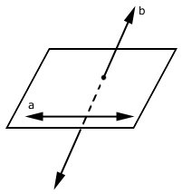

Commutative Algebra
Affineness¶
Example: Infinite disjoint union of affine schemes is not affine in general¶
The infinite disjoint union \(\coprod_{i=1}^{\infty} \mathbb{A}_{k}^{1}\) is not an affine scheme. It is also not isomorphic to either of the two natural algebraic candidates:
The reason is that every affine scheme \(\operatorname{Spec}(A)\) is quasi-compact: any open cover admits a finite subcover. The infinite disjoint union \(\coprod_{i=1}^{\infty} \mathbb{A}_{k}^{1}\) carries the open cover by its individual copies \(\{\mathbb{A}_{k}^{1}\}_{i=1}^{\infty}\), and since these are pairwise disjoint and nonempty, no finite subcover exists. Therefore \(\coprod_{i=1}^{\infty} \mathbb{A}_{k}^{1}\) is not quasi-compact, hence not affine.
By contrast, \(\operatorname{Spec}(\bigoplus_{i=1}^{\infty}k[x])\) and \(\operatorname{Spec}(\prod_{i=1}^{\infty}k[x])\) are affine by definition (they are spectra of rings), hence quasi-compact. All three schemes are therefore pairwise non-isomorphic. In general, an infinite disjoint union of nonempty schemes is never quasi-compact, so it is never affine.
Example: Affine push-forward is exact¶
Let \(f: X \to Y\) be an affine morphism and \(\mathscr{F}\) a quasi-coherent sheaf on \(X\). Then \(R^{i}f_{*}\mathscr{F} = 0\) for all \(i \geq 1\): the higher direct images vanish.
For any affine open \(V \subseteq Y\), the preimage \(f^{-1}(V)\) is affine by definition of an affine morphism. The higher direct image sheaf evaluated on \(V\) is
Since \(f^{-1}(V)\) is affine and \(\mathscr{F}\) is quasi-coherent, Serre's vanishing theorem gives \(H^{i}(f^{-1}(V), \mathscr{F}|_{f^{-1}(V)}) = 0\) for \(i \geq 1\). As this holds for every affine open \(V\) covering \(Y\), we conclude \(R^{i}f_{*}\mathscr{F} = 0\) for \(i \geq 1\).
The quasi-coherence hypothesis on \(\mathscr{F}\) is essential: for a general \(\mathcal{O}_X\)-module, Serre's vanishing theorem does not apply and the higher cohomology on an affine scheme can be nonzero.
Remark¶
An immediate consequence: push-forward along a finite morphism is exact. Every finite morphism \(f: X \to Y\) is affine by definition (with \(f_*\mathcal{O}_X\) a finite \(\mathcal{O}_Y\)-module), so the vanishing \(R^i f_* \mathscr{F} = 0\) for \(i \geq 1\) applies to any quasi-coherent \(\mathscr{F}\) on \(X\).
Example: Closed subscheme of an affine scheme is affine but an open subscheme might not¶
Every closed subscheme of an affine scheme is affine: if \(Y = \operatorname{Spec}(A)\) and \(X \hookrightarrow Y\) is defined by an ideal \(I \subseteq A\), then \(X = \operatorname{Spec}(A/I)\). Open subschemes, however, need not be affine.
Closed subschemes via Serre's criterion. The closed case also follows from a cohomological argument that generalizes well. Let \(f: X \hookrightarrow Y\) be a closed immersion with \(Y\) affine and \(X\) Noetherian. Since \(f\) is affine, we have \(H^{i}(X, \mathscr{F}) = H^{i}(Y, f_{*}\mathscr{F})\) for all \(i \geq 0\) and all quasi-coherent \(\mathscr{F}\). Since \(Y\) is affine and \(f_*\mathscr{F}\) is quasi-coherent on \(Y\), Serre's vanishing gives \(H^{i}(Y, f_{*}\mathscr{F}) = 0\) for \(i \geq 1\), confirming affineness of \(X\) by Serre's criterion.
The punctured plane is not affine. Take \(U = \mathbb{A}_{k}^{2} \setminus \{0\}\). Since the origin has codimension 2 in the normal scheme \(\mathbb{A}_{k}^{2}\), Hartogs' extension theorem gives
If \(U\) were affine, the canonical morphism \(U \to \operatorname{Spec}(\Gamma(U, \mathcal{O}_U)) = \operatorname{Spec}(k[x,y]) = \mathbb{A}_{k}^{2}\) would be an isomorphism, contradicting \(U \neq \mathbb{A}_{k}^{2}\). Alternatively, \(U\) is not affine because \(H^{1}(U, \mathcal{O}_{U}) \neq 0\): a Cech computation on the cover \(D(x) \cup D(y)\) produces the nonzero class represented by \(x^{-1}y^{-1}\).
The dichotomy is that removing a closed subset of codimension \(\geq 2\) from a normal affine scheme preserves global sections (by Hartogs) but can introduce nonvanishing \(H^1\), while removing a codimension-1 locus corresponds to localization and preserves affineness.
Example: \(0\)-dimensional affine scheme, infinitely many closed points¶
The ring \(R = \prod_{i=1}^{\infty} k\) (countably infinite product of copies of a field \(k\)) gives a \(0\)-dimensional affine scheme \(\operatorname{Spec}(R)\) with infinitely many closed points.
Infinitely many maximal ideals. For each index \(i\), the projection \(\pi_i: R \to k\) onto the \(i\)-th factor has kernel \(\mathfrak{m}_i = \{(a_1, a_2, \ldots) \mid a_i = 0\}\). Since \(R/\mathfrak{m}_i \cong k\), each \(\mathfrak{m}_i\) is maximal, and these are pairwise distinct.
Krull dimension zero. Every prime ideal of \(R\) is maximal. The ring \(R\) is von Neumann regular: every element \(a = (a_1, a_2, \ldots)\) satisfies \(a = a^2 b\) for \(b = (b_1, b_2, \ldots)\) where \(b_i = a_i^{-1}\) if \(a_i \neq 0\) and \(b_i = 0\) otherwise. This identity passes to quotients, so \(R/\mathfrak{p}\) is a von Neumann regular integral domain for any prime \(\mathfrak{p}\). But a von Neumann regular domain is a field (if \(a \neq 0\) then \(a = a^2 b\) gives \(1 = ab\)), so every prime is maximal and \(\dim(R) = 0\).
The ring \(R\) is not Noetherian: the ascending chain of ideals \((e_1) \subset (e_1, e_2) \subset (e_1, e_2, e_3) \subset \cdots\) (where \(e_i\) is the \(i\)-th standard idempotent) does not stabilize. This is consistent with the fact that a \(0\)-dimensional Noetherian ring has only finitely many primes. Note also that \(\operatorname{Spec}(R)\) has uncountably many points: besides the \(\mathfrak{m}_i\), there are prime ideals associated to non-principal ultrafilters on \(\mathbb{N}\), and these are not of the form \(\mathfrak{m}_i\).
Remark: Being of finite type is important¶
For a nonzero finite type \(k\)-algebra \(S\), having \(\operatorname{dim}(S) = 0\) is equivalent to having finitely many prime ideals. If \(\operatorname{dim}(S) = 0\), then Noether normalization gives \(S\) finite over \(k\), hence Artinian, so it has finitely many primes. Conversely, if \(\operatorname{dim}(S) \geq 1\), Noether normalization provides a finite injection \(k[x] \hookrightarrow S\), and the infinitely many primes of \(k[x]\) pull back to infinitely many primes of \(S\). This equivalence requires the finite type hypothesis, as the previous example shows. See Stacks project, Tag 02IF.
Reduced and separated¶
Remark: Integral fibres v.s. connected fibres¶
An integral scheme is both reduced and irreducible, hence connected. The converse fails in two independent ways: \(\operatorname{Spec}(k[x,y]/(xy))\) is connected but reducible (union of two lines meeting at the origin), and \(\operatorname{Spec}(k[x]/(x^2))\) is connected and irreducible but not reduced. Neither is integral.
For fibres of a morphism \(f: X \to S\), requiring geometric fibres to be integral is much stronger than requiring them to be connected: it imposes both irreducibility and reducedness after every base change to a geometric point.
Remark: Integral scheme of finite type over an algebraically closed field \(k\) v.s. Noetherian scheme¶
An integral scheme of finite type over an algebraically closed field \(k\) is automatically Noetherian: it admits a finite cover by affine opens \(\operatorname{Spec}(A_i)\) with each \(A_i\) a finitely generated \(k\)-algebra, hence Noetherian by the Hilbert basis theorem. It also carries the additional structure of integrality (each \(A_i\) is a domain). Neither condition implies the other in general: \(\operatorname{Spec}(k[x,y]/(xy))\) is Noetherian but not integral, while \(\operatorname{Spec}(k[x_1, x_2, \ldots])\) is integral but not Noetherian.
Example: \(\mathrm{Cl}\) of the affine line with double origins¶
Let \(\overline{\mathbb{A}}_{k}^{1}\) be the affine line with double origins over a field \(k\), obtained by gluing \(U_1 = \operatorname{Spec}(k[x])\) and \(U_2 = \operatorname{Spec}(k[y])\) along \(U_1 \setminus \{0\} \cong U_2 \setminus \{0\}\) via \(x \mapsto y\). This scheme is integral, locally Noetherian, and locally factorial (both charts are PIDs), but not separated. Although Hartshorne restricts \(\operatorname{Cl}\) to separated schemes, the definitions extend, giving:
Weil class group. The two origins \(O_1 \in U_1\) and \(O_2 \in U_2\) are distinct codimension-1 points. A rational function on \(\overline{\mathbb{A}}_{k}^{1}\) is an element of \(k(x)\), and any such function that vanishes at \(O_1\) also vanishes at \(O_2\) (since both origins share the same function field). Therefore the Weil divisor \(O_1 - O_2\) is not principal, and it generates \(\operatorname{Cl}(\overline{\mathbb{A}}_{k}^{1}) \cong \mathbb{Z}\); the remaining codimension-1 points (those of \(\mathbb{A}^1 \setminus \{0\}\)) contribute only principal divisors, as in \(\mathbb{A}^1\).
Cartier class group. The global sections are \(\Gamma(\overline{\mathbb{A}}_{k}^{1}, \mathcal{O}) = k[x]\): a section must restrict to a polynomial on each chart, and the gluing forces agreement. Since \(k[x]\) is a PID, every Cartier divisor on \(\overline{\mathbb{A}}_{k}^{1}\) is principal, so \(\operatorname{CaCl}(\overline{\mathbb{A}}_{k}^{1}) = 0\).
Picard group. Non-separatedness breaks the isomorphism \(\operatorname{CaCl} \cong \operatorname{Pic}\) that holds on separated locally factorial integral schemes. One constructs a nontrivial line bundle by modifying the gluing datum on the overlap \(U_1 \setminus \{0\} \cong U_2 \setminus \{0\}\): using the transition function \(x^n\) for \(n \in \mathbb{Z}\) produces a line bundle that is trivial if and only if \(n = 0\), giving \(\operatorname{Pic}(\overline{\mathbb{A}}_{k}^{1}) \cong \mathbb{Z}\).
Example: Reduced schemes: functions are determined by their values¶
On a reduced scheme \(X\), a global section \(f \in \Gamma(X, \mathcal{O}_X)\) is zero if and only if it vanishes at every point, i.e., \(f(\mathfrak{p}) = 0\) in \(k(\mathfrak{p})\) for all \(\mathfrak{p} \in X\). On non-reduced schemes, nonzero nilpotent elements vanish everywhere.
The nilradical criterion. In a ring \(R\), the nilradical is
An element \(f \in R\) satisfies \(f(\mathfrak{p}) = 0\) in \(k(\mathfrak{p}) = R_{\mathfrak{p}}/\mathfrak{p}R_{\mathfrak{p}}\) for all primes \(\mathfrak{p}\) if and only if \(f \in \mathfrak{p}\) for all primes \(\mathfrak{p}\), i.e., \(f \in \operatorname{nil}(R)\). When \(R\) is reduced, \(\operatorname{nil}(R) = 0\), so \(f = 0\). When \(\operatorname{Spec}(R)\) is irreducible, \(\operatorname{nil}(R)\) is the unique minimal prime (the generic point \(\eta\)), and \(f(\eta) = 0\) if and only if \(f\) is nilpotent; on an irreducible reduced scheme, this forces \(f = 0\).
A non-reduced example. Take \(R = k[x,y]/(x^m y^n)\) with \(m, n \geq 1\). The two minimal primes are \(\mathfrak{p}_1 = (x)\) and \(\mathfrak{p}_2 = (y)\), so
The element \(f = xy\) is nonzero in \(R\) (for instance when \(m = n = 1\), the ring \(R = k[x,y]/(xy)\) has \(xy = 0\), but for \(m, n \geq 2\) the element \(xy\) survives). For the case \(m = n = 1\), we have \(xy = 0\) in \(R\), so instead consider \(R = k[x,y]/(x^2y)\): the nilradical is \(\operatorname{nil}(R) = (x) \cap (y) = (xy)\), and \(f = xy\) is nonzero in \(R\) yet \(f \in \operatorname{nil}(R)\), so \(f(\mathfrak{p}) = 0\) for every prime \(\mathfrak{p}\).
By contrast, \(f = x\) does not vanish everywhere: \(f(\mathfrak{p}_2) = x \in k(\mathfrak{p}_2) = k(x) \neq 0\), so \(x\) is nonzero at the generic point of the \(x\)-axis. On the open set \(D(y) \cong \operatorname{Spec}(k[y, y^{-1}, x]/(x^2))\), the element \(x\) is nilpotent in \(\mathcal{O}(D(y))\), reflecting the non-reduced structure along the \(y\)-axis.
A subtlety: localizations \(\operatorname{Spec}((k[x,y]/(x^m y^n))_{y - x^k})\) for different values of \(k\) can produce non-isomorphic affine schemes with homeomorphic underlying spaces, since different localizations invert different functions and alter the nilpotent structure.
Remark: Integral = reduced + irreducible¶
A scheme \(X\) is integral if and only if it is both reduced and irreducible. In the affine case \(X = \operatorname{Spec}(R)\), this means \(R\) is an integral domain: no zero divisors and no nilpotent elements. Equivalently, \((0)\) is a prime ideal. The unique generic point \(\eta\) of an irreducible scheme corresponds to the nilradical (which is \((0)\) for an integral scheme). In practice, "integral" means: each affine open has coordinate ring a domain, and the scheme has a unique generic point.
Example: A projective scheme with many global sections¶
For each positive integer \(d\), the projective "double line"
satisfies \(\dim_k H^{0}(X, \mathcal{O}_{X}) = d + 1\) and has arithmetic genus \(p_a(X) = -d\). This contrasts sharply with the case of a projective variety (integral projective scheme over \(k\)), where \(H^0(X, \mathcal{O}_X) = k\) always.
Computing global sections. Cover \(X\) by the standard affine charts \(U = \operatorname{Spec}(R[u^{-1}]_0)\) and \(V = \operatorname{Spec}(R[v^{-1}]_0)\). The degree-zero parts are
A global section is a compatible pair from each chart, so we need
on the overlap. The defining relation \(u^d x = v^d y\) gives \(\frac{x}{v} = \frac{y}{u} \cdot \left(\frac{v}{u}\right)^{d-1}\) on the overlap. Substituting and comparing: the "reduced part" \(a\) must equal the constant term of \(f\) (both are polynomials in inverse variables, so both must be constants), while the "nilpotent part" gives \(b(v/u) = g(u/v) \cdot (v/u)^{d-1}\). Since \(b\) is a polynomial in \(v/u\) and \(g\) is a polynomial in \(u/v\), the function \(g\) can be any polynomial of degree \(\leq d-1\) in \(u/v\). This produces \(1 + d\) linearly independent global sections: the constant from the reduced part, and \(d\) sections from the nilpotent direction.
The non-reduced structure (the nilpotent variable \(y/u\)) creates the extra degrees of freedom. On a projective variety, global regular functions are forced to be constant by properness and integrality; here the nilpotent directions evade this constraint.
Remark¶
For a projective variety (integral projective scheme over \(k\)), we always have \(H^{0}(X, \mathcal{O}_{X}) = k\). The double line above has many global sections but, being proper, cannot admit a non-constant morphism to any affine scheme: any such morphism factors through \(\operatorname{Spec}(\Gamma(X, \mathcal{O}_X))\), which is a fat point \(\operatorname{Spec}(k[x,y]/(y^2))\) rather than a variety. More precisely, any \(k\)-algebra homomorphism \(k[t] \to k[\epsilon]/(\epsilon^2)\) factors through \(k[t]/(t - a)^2\) for some \(a \in k\), reflecting the non-reduced structure.
Example: Differences: \(\mathbb{A}_{k}^{1}-\{0\}\hookrightarrow \mathbb{A}_{k}^{1}\) and \(\mathbb{A}_{k}^{2}-\{0\}\hookrightarrow \mathbb{A}_{k}^{2}\)¶
The punctured affine line \(\mathbb{A}_{k}^{1} \setminus \{0\} = \operatorname{Spec}(k[x, x^{-1}])\) is affine, but the punctured affine plane \(\mathbb{A}_{k}^{2} \setminus \{0\}\) is not. This distinction has immediate consequences for separatedness of schemes with double origins.
Non-affineness of the punctured plane. Cover \(U = \mathbb{A}_{k}^{2} \setminus \{0\}\) by \(D(x) = \operatorname{Spec}(k[x, x^{-1}, y])\) and \(D(y) = \operatorname{Spec}(k[x, y, y^{-1}])\). Their intersection is \(D(xy) = \operatorname{Spec}(k[x, x^{-1}, y, y^{-1}])\). Computing global sections:
If \(U\) were affine, then \(U \cong \operatorname{Spec}(k[x, y]) = \mathbb{A}_{k}^{2}\), contradicting the removal of the origin. Alternatively, the Cech complex for this cover gives
so \(U\) is not affine by Serre's criterion.
Consequence for separatedness. The affine plane with double origins \(\overline{\mathbb{A}_{k}^{2}}\) has two affine charts \(U_1 \cong U_2 \cong \mathbb{A}_{k}^{2}\) with \(U_1 \cap U_2 = \mathbb{A}_{k}^{2} \setminus \{0\}\). Since this intersection is not affine and separatedness requires all pairwise intersections of affine opens to be affine, \(\overline{\mathbb{A}_{k}^{2}}\) is not separated.
In contrast, removing a codimension-1 locus from \(\mathbb{A}^1\) gives the localization \(k[x, x^{-1}]\), which is affine. Thus the line with double origins \(\overline{\mathbb{A}_{k}^{1}}\) has affine intersection of its charts (\(\mathbb{A}^1 \setminus \{0\}\)), and its non-separatedness must be detected by the diagonal criterion rather than the affine intersection test.
The underlying principle: removing a closed subset of codimension \(\geq 2\) from a normal affine scheme does not change global sections (Hartogs' extension), which obstructs affineness of the complement. Removing codimension-1 loci corresponds to localization, which preserves affineness.
Example: Separateness: a translation¶
A scheme \(X\) over an affine base \(S = \operatorname{Spec}(A)\) is separated if and only if there exists an affine open cover \(\{U_i\}\) such that (1) each pairwise intersection \(U_i \cap U_j\) is affine, and (2) \(\Gamma(U_i)\) and \(\Gamma(U_j)\) generate \(\Gamma(U_i \cap U_j)\) as an \(A\)-algebra.
Proof of the criterion. If \(X\) is separated, the diagonal \(\Delta: X \to X \times_S X\) is a closed immersion. For affine opens \(U_i, U_j \subseteq X\), we have \(U_i \cap U_j = \Delta^{-1}(U_i \times_S U_j)\). Since \(U_i \times_S U_j \cong \operatorname{Spec}(\Gamma(U_i) \otimes_A \Gamma(U_j))\) is affine and \(\Delta\) is a closed immersion, the preimage \(U_i \cap U_j\) is a closed subscheme of an affine scheme, hence affine. The closed immersion exhibits \(\Gamma(U_i \cap U_j)\) as a quotient of \(\Gamma(U_i) \otimes_A \Gamma(U_j)\), so condition (2) holds. The converse is checked by verifying that the diagonal morphism, when restricted to each \(U_i \times_S U_j\), is a closed immersion.
\(\mathbb{P}_{\mathbb{Z}}^{n}\) is separated. The standard affine cover \(\{D_+(x_i)\}\) has pairwise intersections \(D_+(x_i x_j)\), which are affine. The coordinate ring of \(D_+(x_i x_j)\) is generated by the coordinate rings of \(D_+(x_i)\) and \(D_+(x_j)\) over \(\mathbb{Z}\), so both conditions are satisfied.
The line with double origins \(\overline{\mathbb{A}_{k}^{1}}\) passes the affine intersection test. With charts \(U_1, U_2 \cong \mathbb{A}^1\), the intersection \(U_1 \cap U_2 = \mathbb{A}^1 \setminus \{0\} = \operatorname{Spec}(k[x, x^{-1}])\) is affine, and \(k[x]\) generates \(k[x, x^{-1}]\) together with \(k[y] = k[x]\) (via \(x^{-1} = y^{-1} \cdot (y/x)\)). Nevertheless, \(\overline{\mathbb{A}_{k}^{1}}\) is not separated: the diagonal criterion fails because the two origins map to distinct non-separated points in \(\overline{\mathbb{A}_{k}^{1}} \times \overline{\mathbb{A}_{k}^{1}}\).
The plane with double origins \(\overline{\mathbb{A}_{k}^{2}}\) is not separated. Here \(U_1 \cap U_2 = \mathbb{A}^{2} \setminus \{0\}\), which is not affine (as shown in ecag-0037). Condition (1) already fails, immediately proving non-separatedness. This argument works for \(\overline{\mathbb{A}_{k}^{n}}\) with \(n \geq 2\) but not for \(n = 1\).
Example: Generically reduced subscheme of a normal scheme but not reduced¶
A closed subscheme of a normal scheme can be generically reduced yet fail to be globally reduced. Consider the simpler example \(Z = \operatorname{Spec}(k[x, y]/(y^2, xy)) \subset \mathbb{A}_{k}^{2}\) rather than the original \(\mathbb{A}^3\) version.
The ideal \(I = (y^2, xy)\) has a single minimal prime \((y)\), so \(Z_{\mathrm{red}} = V(y) \cong \mathbb{A}^1\). The primary decomposition is \(I = (y) \cap (x, y^2)\): the first component is minimal, the second is an embedded component supported at the origin.
Generic reducedness. At the generic point \(\eta = (y)\) of \(Z_{\mathrm{red}}\), the element \(x\) is invertible, so \(xy = 0\) forces \(y = 0\) in the localization. Thus \(\mathcal{O}_{Z, \eta} = k(x)[y]/(y) \cong k(x)\), a field.
Non-reducedness at the origin. At \(\mathfrak{m} = (x, y)\), the element \(x\) is not invertible in \(\mathcal{O}_{Z, \mathfrak{m}}\), so \(xy = 0\) does not force \(y = 0\). Since \(y^2 = 0\) but \(y \neq 0\) in \(\mathcal{O}_{Z, \mathfrak{m}}\), the local ring is not reduced. The nilradical of \(k[x,y]/(y^2, xy)\) is \((y)\).
The embedded primary component \((x, y^2)\) introduces the non-reduced structure at the origin while leaving the generic point unaffected.
Remark¶
This example illustrates a general principle: for a Noetherian scheme, being reduced is equivalent to satisfying Serre's conditions \(R_0\) (regular in codimension 0, i.e., generically reduced) and \(S_1\) (no embedded primes). The scheme \(Z\) above satisfies \(R_0\) but fails \(S_1\), resulting in a non-reduced scheme. See MathOverflow: Is being reduced a generic property of schemes?.
Remark: Some applications¶
The criterion "\(R_0 + S_1\) implies reduced" (Serre's criterion) is a standard tool for establishing reducedness of moduli-theoretic schemes. Two representative applications:
-
The scheme parametrizing pairs of \(n \times n\) matrices \((X, Y)\) such that both \(XY\) and \(YX\) are upper-triangular is reduced: one exhibits an open dense smooth locus (\(R_0\)) and verifies no embedded components (\(S_1\)) by dimension counting.
-
The scheme \(T^{*}(\mathfrak{g} \times \mathbb{C}^{n})\) (where \(\mathfrak{g}\) is a Lie algebra), realized as the zero fibre of a moment map, is reduced by the same strategy: verify generic smoothness and \(S_1\).
F-notions¶
First recall some basic notations with "f":
- quasi-finite
- finite
- flat
- faithfully flat
- of finite type
- locally of finite type
- finite presentation
Example: Quasi-finite, surjective, of finite type, but not finite¶
The ring map \(\varphi: k[x] \to k[x, x^{-1}] \oplus k\), \(x \mapsto (x, 0)\), induces a morphism of schemes that is quasi-finite, surjective, and of finite type, but not finite.
The source scheme decomposes as \(\operatorname{Spec}(k[x, x^{-1}]) \sqcup \operatorname{Spec}(k)\): the first component is the open immersion \(\mathbb{A}_{k}^{1} \setminus \{0\} \hookrightarrow \mathbb{A}_{k}^{1}\), and the second maps the isolated point to the origin. Both components are of finite type over \(k[x]\) (the localization \(k[x, x^{-1}]\) is generated as a \(k[x]\)-algebra by \(x^{-1}\), and \(k \cong k[x]/(x)\)), so the morphism is of finite type. It is surjective since every closed point of \(\mathbb{A}^1\) is hit.
Fibre analysis. Over \((x - a)\) with \(a \neq 0\): both components contribute one point, giving a two-point fibre. Over \((x)\): only \(\operatorname{Spec}(k)\) contributes (since \(x\) is invertible in \(k[x,x^{-1}]\)), giving a one-point fibre. Over the generic point \((0)\): only \(\operatorname{Spec}(k[x,x^{-1}])\) contributes. Every fibre is finite, so the morphism is quasi-finite.
Non-finiteness. The \(k[x]\)-module \(k[x, x^{-1}]\) is not finitely generated: the elements \(\{x^{-n}\}_{n \geq 1}\) are \(k[x]\)-linearly independent. This is the key distinction: finiteness requires the target to be a finitely generated module over the source, not merely a finitely generated algebra.
Example: Locally of finite type but not of finite type¶
The identity-on-each-component morphism \(\coprod_{i \in I} \mathbb{A}_{k}^{1} \to \mathbb{A}_{k}^{1}\), where \(I\) is an infinite index set, is locally of finite type but not of finite type.
Each component is the identity \(\mathbb{A}_{k}^{1} \to \mathbb{A}_{k}^{1}\), which is of finite type, so the morphism is locally of finite type. However, "of finite type" = "locally of finite type" + "quasi-compact," and the source \(\coprod_{i \in I} \mathbb{A}_{k}^{1}\) is not quasi-compact: the open cover by individual copies admits no finite subcover. The preimage of \(\mathbb{A}_{k}^{1}\) (a quasi-compact open in the target) is the entire non-quasi-compact source, so the morphism fails to be quasi-compact, hence is not of finite type.
Example: Quasi-finite (and fibre has same cardinality) but not flat¶
The normalization \(\nu: \operatorname{Spec}(k[t]) \to \operatorname{Spec}(k[t^2, t^3])\) of the cuspidal cubic \(C: y^2 = x^3\) (via \(x = t^2\), \(y = t^3\)) is quasi-finite with every fibre consisting of exactly one point, but it is not flat.
Bijective fibres. The map on closed points sends \(t = a\) to \((t^2, t^3) = (a^2, a^3)\), which is bijective: given \((a^2, a^3)\) with \(a \neq 0\), we recover \(a = a^3/a^2\), and \(a = 0\) maps to \((0,0)\). Every fibre has exactly one point.
Non-flatness. Consider the maximal ideal \(I = (t^2, t^3) \subset k[t^2, t^3]\) and the inclusion \(I \hookrightarrow k[t^2, t^3]\). After tensoring with \(k[t]\):
is not injective. The element \(t^2 \otimes t - t^3 \otimes 1 \in I \otimes_{k[t^2, t^3]} k[t]\) is nonzero (since \(t \notin k[t^2, t^3]\), it cannot be simplified), but its image in \(k[t]\) is \(t^2 \cdot t - t^3 \cdot 1 = 0\). So \(k[t]\) is not flat over \(k[t^2, t^3]\).
Remark¶
The miracle flatness theorem (Matsumura, Theorem 23.1) states: if \((A, \mathfrak{m}) \to (B, \mathfrak{n})\) is a local homomorphism of Noetherian local rings with \(A\) regular, \(B\) Cohen-Macaulay, and \(\dim B = \dim A + \dim B/\mathfrak{m}B\), then \(B\) is flat over \(A\). In the example above, \(A = k[t^2, t^3]_{(t^2, t^3)}\) is 1-dimensional but not regular (its maximal ideal requires 2 generators), so the theorem does not apply.
Example: Of finite type but not of finite presentation¶
Over a non-Noetherian base ring, a morphism can be of finite type without being of finite presentation. The closed embedding \(\operatorname{Spec}(k) \to \operatorname{Spec}(k[t_1, t_2, \ldots])\) is of finite type but not of finite presentation.
Let \(R = k[t_1, t_2, \ldots]\) be the polynomial ring in countably many variables and let \(I = (t_1, t_2, \ldots)\). The quotient map \(R \to R/I \cong k\) gives a closed embedding \(\operatorname{Spec}(k) \hookrightarrow \operatorname{Spec}(R)\).
Of finite type. We need \(k\) to be a finitely generated \(R\)-algebra. Indeed, \(k \cong R/I\), and \(R\) surjects onto \(k\) (so \(k\) is generated by zero elements as an \(R\)-algebra). Alternatively, \(k \cong R[x_1, \ldots, x_0]/J\) where \(J\) maps to \(I\).
Not of finite presentation. A morphism \(\operatorname{Spec}(R/I) \to \operatorname{Spec}(R)\) is of finite presentation if \(I\) is a finitely generated ideal of \(R\) (after possibly adding finitely many variables). But \(I = (t_1, t_2, \ldots)\) is not finitely generated: any finite subset of generators spans only a proper sub-ideal.
Remark: What about noetherian scheme?¶
For a Noetherian ring \(R\), every finitely generated \(R\)-algebra \(S\) is automatically of finite presentation. Indeed, if \(S \cong R[x_1, \ldots, x_n]/I\), then \(R[x_1, \ldots, x_n]\) is Noetherian by the Hilbert basis theorem, so \(I\) is finitely generated. Therefore, over a Noetherian base, "of finite type" and "of finite presentation" are equivalent conditions.
Remark: Formal power series ring is Noetherian¶
If \(R\) is a Noetherian ring, then the formal power series ring \(R[[t]]\) is also Noetherian. This follows from a power series analogue of the Hilbert basis theorem. Note the crucial distinction: \(R[[t]]\) (formal power series in one variable) is Noetherian when \(R\) is, but \(R[t_1, t_2, \ldots]\) (polynomial ring in countably many variables) is never Noetherian regardless of \(R\). The former is a completion; the latter is a colimit. They have very different finiteness properties.
Example: Of finite type but not finite¶
For \(n \geq 1\), the affine \(n\)-space \(\mathbb{A}_{k}^{n}\) and the projective \(n\)-space \(\mathbb{P}_{k}^{n}\) are \(k\)-schemes of finite type that are not finite over \(k\).
The structure morphism \(\mathbb{A}_{k}^{n} = \operatorname{Spec}(k[x_1, \ldots, x_n]) \to \operatorname{Spec}(k)\) is of finite type since \(k[x_1, \ldots, x_n]\) is a finitely generated \(k\)-algebra. However, \(k[x_1, \ldots, x_n]\) is not a finitely generated \(k\)-module (it is infinite-dimensional as a \(k\)-vector space), so the morphism is not finite.
Similarly, \(\mathbb{P}_{k}^{n} \to \operatorname{Spec}(k)\) is of finite type (each standard affine chart is \(\operatorname{Spec}\) of a finitely generated \(k\)-algebra) but not finite (it is not even affine for \(n \geq 1\), while finite morphisms are affine).
In fact, most schemes of finite type encountered in practice are not finite. Finite \(k\)-schemes are precisely the spectra of finite-dimensional \(k\)-algebras, i.e., finite collections of (possibly fat) points.
Remark: Finite \(\Rightarrow\) of finite type¶
A finite morphism \(f: X \to Y\) is always of finite type. Recall: \(f\) is finite if for every affine open \(\operatorname{Spec}(A) \subseteq Y\), the preimage \(f^{-1}(\operatorname{Spec}(A)) = \operatorname{Spec}(B)\) is affine with \(B\) a finitely generated \(A\)-module. Since a finitely generated \(A\)-module is in particular a finitely generated \(A\)-algebra (the module generators also serve as algebra generators), every finite morphism is of finite type.
More precisely, finite \(\Rightarrow\) integral + of finite type, and also finite \(\Rightarrow\) proper + affine + quasi-finite + of finite type.
Example: Proper but not finite¶
The structure morphism \(\mathbb{P}_{k}^{1} \to \operatorname{Spec}(k)\) is proper but not finite.
Properness of \(\mathbb{P}_{k}^{1} \to \operatorname{Spec}(k)\) follows from the general fact that projective morphisms are proper. Alternatively, one checks directly: it is of finite type, separated, and universally closed (by the valuative criterion or because projective space is complete).
It is not finite because \(\mathbb{P}_{k}^{1}\) is not affine (it has \(H^1(\mathbb{P}_{k}^{1}, \mathcal{O}(-2)) \neq 0\)), while the source of any finite morphism over an affine base must be affine. Alternatively, finite morphisms have finite (discrete) fibres and are affine, but \(\mathbb{P}_{k}^{1}\) is a \(1\)-dimensional connected projective scheme, hence not affine.
Remark: Finite v.s. proper¶
The relationship between finite and proper morphisms is summarized by the following implications:
- Finite \(\Rightarrow\) quasi-finite. (Finite fibres are finite sets.)
- Finite \(\Rightarrow\) projective. (A finite morphism \(\operatorname{Spec}(B) \to \operatorname{Spec}(A)\) with \(B\) a finite \(A\)-module can be embedded into \(\mathbb{P}_A^n\) via the symmetric algebra.)
- Finite \(\Rightarrow\) proper. For the affine case \(f: \operatorname{Spec}(B) \to \operatorname{Spec}(A)\) with \(B\) finite over \(A\), properness follows from the valuative criterion: given a commutative diagram with a DVR \((R, K)\):
we need a lift \(\operatorname{Spec}(R) \to \operatorname{Spec}(B)\). Since \(B\) is integral over \(A\) (being a finite \(A\)-module), the image \(v(B) \subset K\) is integral over \(u(A) \subset R\). Since \(R\) is integrally closed in \(K\), we get \(v(B) \subset R\), giving the required lift.
- Proper + affine \(\Rightarrow\) finite. (A proper affine morphism has finite fibres and the algebra of sections is finitely generated as a module.)
- Proper + quasi-finite \(\Rightarrow\) finite. (Zariski's Main Theorem.)
- Finite \(\Rightarrow\) of finite type.
Example: An affine and projective morphism¶
A morphism \(f: X \to Y\) that is both affine and projective is necessarily finite. Conversely, every finite morphism is both affine and projective. Thus "affine + projective = finite."
If \(f\) is affine and projective, then \(f\) is proper (projective morphisms are proper) and affine. By the result "proper + affine \(\Rightarrow\) finite," the morphism \(f\) is finite.
For an explicit example, consider any finite morphism such as \(\operatorname{Spec}(k[x]/(x^n)) \to \operatorname{Spec}(k)\). The source is affine, and being finite over a point makes it projective (a finite scheme over a field is both affine and projective). Another example: the degree \(d\) map \(\mathbb{A}_{k}^{1} \to \mathbb{A}_{k}^{1}\) given by \(x \mapsto x^d\) corresponds to \(k[x] \hookrightarrow k[x]\) via \(x \mapsto x^d\); equivalently \(k[t] \to k[x]\), \(t \mapsto x^d\), making \(k[x]\) a free \(k[t]\)-module of rank \(d\) with basis \(1, x, \ldots, x^{d-1}\).
Example: affine morphism but not of finite type¶
The morphism \(\operatorname{Spec}(k[x_1, x_2, \ldots]) \to \operatorname{Spec}(k)\) is affine but not of finite type.
The morphism is affine because the source is an affine scheme and the preimage of the unique affine open \(\operatorname{Spec}(k)\) in the target is affine. However, \(k[x_1, x_2, \ldots]\) is not a finitely generated \(k\)-algebra (any finite set of generators involves only finitely many variables, hence cannot generate all of \(k[x_1, x_2, \ldots]\)). Therefore the morphism is not of finite type.
Example: morphism of finite type but not affine¶
The structure morphism \(\mathbb{P}_{k}^{1} \to \operatorname{Spec}(k)\) is of finite type but not affine.
The morphism is of finite type: \(\mathbb{P}_{k}^{1}\) is covered by two affine opens \(\operatorname{Spec}(k[x])\) and \(\operatorname{Spec}(k[x^{-1}])\), each of finite type over \(k\), and \(\mathbb{P}_{k}^{1}\) is quasi-compact.
It is not affine because \(\mathbb{P}_{k}^{1}\) is not an affine scheme. If it were, then by Serre's criterion, \(H^{1}(\mathbb{P}_{k}^{1}, \mathcal{O}(-2)) = 0\), but this cohomology group is \(1\)-dimensional over \(k\). Alternatively, the global sections \(\Gamma(\mathbb{P}_{k}^{1}, \mathcal{O}) = k\) would imply \(\mathbb{P}_{k}^{1} \cong \operatorname{Spec}(k)\), contradicting \(\dim \mathbb{P}_{k}^{1} = 1\).
Example: Finite, dominant morphism between normal varieties but not flat¶
Let \(\operatorname{char}(k) \neq 2\). The morphism \(f: X = \operatorname{Spec}(k[x,y]) \to Y = \operatorname{Spec}(k[x^2, xy, y^2])\) induced by the inclusion \(k[x^2, xy, y^2] \hookrightarrow k[x,y]\) is finite and dominant between normal varieties, but not flat.
Both \(X = \mathbb{A}_{k}^{2}\) and \(Y = \operatorname{Spec}(k[x^2, xy, y^2])\) are normal: \(X\) is smooth, and \(Y\) is the quotient of \(X\) by the involution \((x, y) \mapsto (-x, -y)\) (using \(\operatorname{char}(k) \neq 2\)), which is normal since the ring of invariants of a normal domain under a finite group action is normal. The morphism \(f\) is the normalization of \(Y\) in the field extension \(L = k(x, y) \supset K(Y) = k(x^2, xy, y^2)\), which is a degree 2 extension. Note that \(f\) is the normalization in \(L\), not the normalization in \(K(Y)\) itself (since \(Y\) is already normal).
Non-flatness via fibre lengths: Over the origin \(0 \in Y\) (i.e., the maximal ideal \((x^2, xy, y^2) \subset k[x^2, xy, y^2]\)):
This fibre has length \(3\) (a basis for \(k[x,y]/(x^2, xy, y^2)\) over \(k\) is \(\{1, x, y\}\)).
Over a general closed point \((a^2, ab, b^2)\) with \(a, b \neq 0\):
which has length \(2\) (corresponding to the two preimage points \((a, b)\) and \((-a, -b)\)).
Since fibre length jumps from \(2\) to \(3\), the morphism is not flat (flat morphisms preserve fibre length in families over a connected base).
Remark: Miracle flatness theorem¶
The miracle flatness theorem (Matsumura, Theorem 23.1) states: if \(f: X \to Y\) is a morphism of Noetherian schemes with \(X\) Cohen-Macaulay, \(Y\) regular, and fibres equidimensional of the expected dimension \(\dim X - \dim Y\), then \(f\) is flat. The example above shows:
-
\(Y\) being merely normal is insufficient when \(\dim(Y) > 1\). Normal does not imply regular in dimension \(> 1\) (e.g., quotient singularities are normal but not regular). However, for curves (\(\dim Y = 1\)), normal implies regular, so the theorem applies more broadly.
-
The same map, viewed projectively as \(\mathbb{P}_{k}^{1} \to \operatorname{Proj}(k[x,y,z]/(xz - y^2))\) via \([u,v] \mapsto [u^2, uv, v^2]\), is flat. The singular point of \(Y\) (the vertex of the cone) disappears in the projective picture, so all fibres have the same length.
-
In practice, when dealing with regular varieties, finiteness implies flatness by the miracle flatness theorem (since regular implies Cohen-Macaulay).
Example: \(X\) being Cohen-Macaulay is necessary in the miracle flatness theorem¶
The morphism
is not flat, even though \(Y\) is regular and fibres have the same dimension \(0\). This is because \(X\) is not Cohen-Macaulay.
The scheme \(X\) is the union of two planes in \(\mathbb{A}_{k}^{4}\): \(V(z, w)\) and \(V(x+z, y+w)\). The morphism \(f\) is the projection to \(\mathbb{A}_{k}^{2}\), sending \((a, b, 0, 0) \mapsto (a, b)\) and \((a, b, -a, -b) \mapsto (a, b)\).
At a general point \(p = (a, b) \neq (0, 0)\), the fibre consists of two distinct reduced points, so it has length \(2\).
At \(p = (0, 0)\), the scheme-theoretic fibre is:
This has length \(3\) (a \(k\)-basis is \(\{1, z, w\}\)), so the fibre length jumps from \(2\) to \(3\) at the origin.
Since fibre length is not constant, \(f\) is not flat. Here \(Y = \mathbb{A}_{k}^{2}\) is regular and all fibres are \(0\)-dimensional, but \(X\) is not Cohen-Macaulay (the union of two planes meeting at a point in \(\mathbb{A}^4\) fails the Cohen-Macaulay condition by Hartshorne's connectedness theorem).
Remark: Why?¶
The ring \(k[x,y,z,w]/((z,w) \cap (x+z, y+w))\) is not Cohen-Macaulay. This can be established using Hartshorne's connectedness theorem: if \(A\) is a Cohen-Macaulay local ring of dimension \(\geq 2\), then \(\operatorname{Spec}(A) \setminus \{\mathfrak{m}\}\) is connected. The union of two planes meeting at a single point has the property that removing that point disconnects the space, violating this criterion.
The fact that the fibre over \((0,0)\) has degree \(3\) rather than \(2\) is geometrically subtle. In many cases, flatness behaves like a topological invariant (constant fibre degree), but it encodes finer algebraic information. Consider the \(1\)-dimensional analogue:
This is the union of two lines meeting at a point, and the projection to \(\mathbb{A}^1\) is flat (one can verify that \(k[x,y]/(y(y-x))\) is a free \(k[x]\)-module of rank 2 with basis \(\{1, y\}\)). Topologically, this looks similar to the \(2\)-dimensional example, but the flatness behavior is completely different because the \(1\)-dimensional union of lines is Cohen-Macaulay.
Example: Flat but not open; of finite type is necessary¶
The natural morphism \(\operatorname{Spec}(k(x)) \to \operatorname{Spec}(k[x])\) (inclusion of the generic point) is flat but not an open map.
The ring map \(k[x] \hookrightarrow k(x)\) makes \(k(x)\) a \(k[x]\)-module. Since \(k[x]\) is a PID, flatness is equivalent to torsion-freeness, and \(k(x)\) is torsion-free as a \(k[x]\)-module (it is the fraction field). So the map is flat.
However, the morphism is not open. The image of the single point \(\operatorname{Spec}(k(x))\) is the generic point \(\{(0)\} \in \operatorname{Spec}(k[x])\), which is not an open subset of \(\operatorname{Spec}(k[x])\) (the only open set containing the generic point is the whole space, but \(\{(0)\}\) is a proper subset).
The general theorem states that a flat morphism of finite type (between Noetherian schemes) is open. Here, the morphism \(\operatorname{Spec}(k(x)) \to \operatorname{Spec}(k[x])\) is not of finite type: \(k(x)\) is not a finitely generated \(k[x]\)-algebra (one cannot obtain all rational functions by inverting finitely many polynomials). This shows the finite type hypothesis is necessary.
Example: Not finite not surjective, sometimes still flat¶
The open immersion \(\mathbb{A}_{k}^{1} \setminus \{0\} \hookrightarrow \mathbb{A}_{k}^{1}\) is flat, but it is neither finite nor surjective.
The morphism corresponds to the localization \(k[x] \hookrightarrow k[x, x^{-1}]\). Localization is always flat (it is exact), so the map is flat. It is not surjective since the closed point \((x) \in \operatorname{Spec}(k[x])\) is not in the image. It is not finite since \(k[x, x^{-1}]\) is not a finitely generated \(k[x]\)-module (\(\{x^{-n}\}_{n \geq 0}\) are \(k[x]\)-linearly independent).
More generally, any open immersion of schemes is flat: if \(U \hookrightarrow X\) is an open immersion, then for each affine open \(\operatorname{Spec}(A) \subseteq X\), the preimage \(U \cap \operatorname{Spec}(A)\) is a union of principal open sets \(D(f_i)\), and each \(A \to A_{f_i}\) is a localization, hence flat.
Example: \(X\rightarrow X_{red}\) is not flat¶
The natural morphism
is not flat, even though \(Y\) is regular, \(X\) has no embedded points, and fibres are equidimensional. The failure is because \(X\) is not Cohen-Macaulay.
To show non-flatness, we verify that tensoring with \(\mathcal{O}_X\) does not preserve injections. The inclusion of the ideal \(I = (x, y) \hookrightarrow k[x,y]\) is an injection of \(k[x,y]\)-modules. After tensoring with \(\mathcal{O}_X\):
is not injective. The element \(x \otimes z - y \otimes w\) in the left-hand side is nonzero: since \(1 \notin I\), we cannot simplify the tensor product by moving \(x\) or \(y\) to the other side. However, its image in the right-hand side is \(xz - yw = 0\) in the quotient ring (since \(xz - yw\) is one of the defining relations and \(1 \in k[x,y]\) allows the simplification).
The ring \(k[x,y,z,w]/(z^2, zw, w^2, xz - yw)\) has no embedded primes (its associated primes are all minimal), and the fibres over \(Y\) are equidimensional. Nevertheless, it is not Cohen-Macaulay, which is why the miracle flatness theorem does not apply.
Example: Hartshorne \(\mathrm{III}.9.8.4\) and \(\mathrm{III}.12.4\), flat families, dimension jump¶
There exists a flat family of curves in \(\mathbb{P}^{3}\) parametrized by \(\mathbb{A}^{1}\) such that the general fibre is a smooth twisted cubic but the special fibre is a singular curve with an embedded point. The cohomology dimensions \(h^i\) of the ideal sheaf jump at the special fibre, but the Euler characteristic remains constant.
Consider the family given by
where \(a\) is the coordinate on \(\mathbb{A}^{1}\). The corresponding ring homomorphism sends \([x,y,z,w,t] \mapsto [u^{3}, u^{2}v, tuv^{2}, v^{3}, t]\). Using Macaulay2, the ideal of this flat family is
This is flat over \(\mathbb{A}^{1}\) because \(t\) is a non-zero-divisor in \(k[x,y,z,w,t]/I\).
For \(t \neq 0\), the fibre is an ordinary twisted cubic (smooth, rational).
At \(t = 0\), the ideal specializes to \(I_0 = (yz, xz, y^{3} - x^{2}w, z^{2})\) with primary decomposition
The first component is a cuspidal cubic in the plane \(z = 0\); the second is an embedded point at \((0:0:0:1)\).
For the ideal sheaf \(\mathscr{I}\) on \(\mathbb{P}^3 \times \mathbb{A}^1\), the cohomology of the special fibre is:
For \(t \neq 0\): \(h^{i}(\mathbb{P}^{3}, \mathscr{I}_t) = 0\) for all \(i\).
The dimensions \(h^{1}\) and \(h^{2}\) jump at \(t = 0\), but the Euler characteristic \(\chi(\mathscr{I}_t) = 0\) is constant, consistent with the semicontinuity theorem and the constancy of Euler characteristics in flat families.
A similar phenomenon occurs with the family \([u^{4}, u^{3}v, au^{2}v^{2}, uv^{3}, v^{4}] \subset \mathbb{P}^{4}_{\mathbb{A}^{1}}\).
Remark: How to use semi-continuity theorem?¶
In the example above, the semicontinuity theorem is applied to the trivial family \(\mathbb{P}^{3} \times \mathbb{A}^{1} \to \mathbb{A}^{1}\) with the coherent sheaf \(\mathscr{I}\) (the ideal sheaf of the flat family) on \(\mathbb{P}^{3} \times \mathbb{A}^{1}\). The flatness of the family of twisted cubics is used to ensure that \(\mathscr{I}\) is flat over \(\mathbb{A}^{1}\). The semicontinuity theorem then guarantees that \(t \mapsto h^{i}(\mathbb{P}^{3}, \mathscr{I}_t)\) is upper semicontinuous: the value at any point is at least the value at nearby points. One could also apply semicontinuity to the structure sheaf on the flat family itself, but that addresses different cohomology groups.
Remark: A flat family of hypersurfaces of the same degree has constant \(h^{i}\)'s¶
In general, for a flat family \(\{X_t\}\) of subschemes, \(h^{i}(X_t, \mathcal{O}_{X_t})\) can jump at special points. However, for a flat family of hypersurfaces of the same degree \(d\) in \(\mathbb{P}_{T}^{n}\), the function \(t \mapsto h^{i}(X_t, \mathcal{O}_{X_t})\) is constant.
To see this, assume \(T = \operatorname{Spec}(R)\). The structure sheaf of \(X\) is given locally by \(R[x_0, \ldots, x_n]/(f)\) where \(f\) has degree \(d\). Over each fibre at \(\mathfrak{p} \in \operatorname{Spec}(T)\), with residue field \(\kappa = R_{\mathfrak{p}}/\mathfrak{p}R_{\mathfrak{p}}\), after a generic change of coordinates we may write
where \(p_i \in \kappa[x_0, \ldots, x_{n-1}]\) and \(a_n \in \kappa^{\times}\). This change of coordinates requires inverting finitely many elements, so it is valid over a basic open subset \(\operatorname{Spec}(R')\) of \(\operatorname{Spec}(T)\). Over this open subset, \(\mathcal{O}_X\) is given by \(R'[x_0, \ldots, x_n]/(f)\), which is a free \(R'[x_0, \ldots, x_{n-1}]\)-module of rank \(d\), hence free (and in particular flat) over \(R'\). Covering \(\mathbb{P}_T^n\) by affine charts and applying this argument, one concludes that the cohomology dimensions \(h^{i}(X_t, \mathcal{O}_{X_t})\) are constant, since the Hilbert polynomial is constant and all higher cohomology is determined by it for hypersurfaces.
Example: Dimension jumps, semicontinuity theorem¶
Let \(E\) be an elliptic curve over \(k\) and consider the surface \(X = E \times_k E\). The family of degree-\(0\) divisors \(D_P = E \times \{P\} - \Delta|_{\{P\}}\) (where \(\Delta\) is the diagonal) parametrized by \(P \in E\) has \(h^{0}(E, \mathcal{O}_E(D_P))\) jumping at \(P = O\) (the identity element).
Consider the divisor \(\mathscr{D} = E \times \{O\} - \Delta\) on \(E \times E\), and the projection \(\pi_1: E \times E \to E\). The fibre of \(\mathscr{D}\) over a point \(P \in E\) is the degree-\(0\) divisor \(D_P = O - P\) on \(E\).
By the theory of elliptic curves, for a degree-\(0\) divisor \(D\) on \(E\):
The divisor \(D_P = O - P \sim 0\) if and only if \(P = O\). Therefore \(h^{0}(E, \mathcal{O}_E(D_P)) = 1\) when \(P = O\) and \(h^{0}(E, \mathcal{O}_E(D_P)) = 0\) when \(P \neq O\).
This is an instance of the semicontinuity theorem: \(h^0\) jumps up at \(P = O\), consistent with upper semicontinuity.
Example: An application of the semicontinuity theorem + flat family ???? imcomplete¶
It is impossible to have a flat family of rank-\(2\) vector bundles on \(\mathbb{P}^{1}\) parametrized by \(\mathbb{A}_{k}^{1}\) such that all fibres except \(t = 0\) are trivial (\(\mathcal{O}_{\mathbb{P}^{1}} \oplus \mathcal{O}_{\mathbb{P}^{1}}\)), while the fibre at \(t = 0\) is \(\mathcal{O}_{\mathbb{P}^{1}}(a) \oplus \mathcal{O}_{\mathbb{P}^{1}}(-a)\) with \(a \geq 1\).
Suppose such a flat family \(\mathscr{E}\) exists over \(\mathbb{A}^{1}\). By the constancy of Euler characteristics in flat families, for any twist \(\mathscr{E}(n)\), we have \(\chi(\mathscr{E}_t(n)) = \text{const}\) for all \(t\).
For the general fibre (\(t \neq 0\)): \(\mathscr{E}_t = \mathcal{O} \oplus \mathcal{O}\), so
For \(t = 0\): if \(\mathscr{E}_0 = \mathcal{O}(a) \oplus \mathcal{O}(b)\), then
Constancy gives \(a + b = 0\), so \(b = -a\).
By semicontinuity, \(h^0(\mathscr{E}_0) \geq h^0(\mathscr{E}_t) = 2\) for general \(t\). We compute:
So \(a + 1 \geq 2\), giving \(a \geq 1\). By semicontinuity applied to \(h^0\), we also need \(h^1(\mathscr{E}_0) \geq h^1(\mathscr{E}_t)\). For general \(t\), \(h^1(\mathcal{O} \oplus \mathcal{O}) = 0\), and \(h^1(\mathcal{O}(a) \oplus \mathcal{O}(-a)) = a - 1\) for \(a \geq 2\). This is consistent but shows the special fibre must have strictly larger \(h^0\) and \(h^1\). Such a family does exist for \(a \geq 1\) (e.g., deformations of Hirzebruch surfaces), but what cannot happen is a family where the generic fibre is "more split" than the special fibre.
Remark¶
Yes, the semicontinuity theorem is the main tool here. It states that for a proper morphism \(f: X \to T\) and a coherent sheaf \(\mathscr{F}\) on \(X\), flat over \(T\), the function \(t \mapsto h^i(X_t, \mathscr{F}_t)\) is upper semicontinuous. Combined with constancy of \(\chi\), this forces: if \(h^i\) jumps up at a special point, then some other \(h^j\) must also jump to compensate.
Example: Hartshorne \(\mathrm{III}.9.7\), a flat family but corresponding family of projective cones is not flat¶
The family of three points \(X_t = \{[1,0,0], [0,1,0], [1,1,t]\}\) in \(\mathbb{P}_{k}^{2}\), parametrized by \(t \in \mathbb{A}^{1}\), is a flat family. However, the corresponding family of projective cones in \(\mathbb{P}^{3}\) is not flat: the flat limit of the cones differs from the cone over the flat limit.
The ideal of the family is
This is flat over \(\mathbb{A}^{1}\) since \(t\) is a non-zero-divisor in \(k[x,y,z,t]/I\) (alternatively, by the miracle flatness theorem since \(\mathbb{A}^1\) is regular of dimension 1 and each irreducible component dominates \(\mathbb{A}^1\)).
The flat limit as \(t \to 0\) in \(\mathbb{P}^{3}\) (viewing the cones) is determined by the ideal
while the cone over \(X_0 = \{[1,0,0], [0,1,0], [1,1,0]\}\) has ideal
These define different subschemes: restricting to \(V(x,y)\), we get \(\operatorname{Proj}(k[z,w]/(z^{2})) \neq \operatorname{Proj}(k[z,w]/(z))\).
Remark¶
Two important related facts:
-
If a family is "very flat" (meaning the Hilbert function, not just the Hilbert polynomial, is constant), then it is flat, and the corresponding family of projective cones is also very flat.
-
If we have an algebraic family of projectively normal varieties in \(\mathbb{P}_{k}^{n}\) parametrized by a nonsingular curve \(T\) over an algebraically closed field, then it is a very flat family.
The logic for the second statement: by Hartshorne's Theorem III.9.9, an algebraic family of normal varieties is flat, so the Hilbert polynomials are constant. Since \(X_t\) is projectively normal,
where \(S_t\) is the homogeneous coordinate ring. Since the Hilbert polynomial is constant, the Hilbert function \(\dim_{k(t)}(S_t/I_t)_m\) is also eventually constant, and projective normality ensures it equals \(P_t(m)\) for all \(m \geq 0\), giving a very flat family.
Example: Fibre product of two schemes doesn't exist(we mean \(=\emptyset\))¶
The fibre product of \(\operatorname{Spec}(\mathbb{Z}/2\mathbb{Z})\) and \(\operatorname{Spec}(\mathbb{Z}/3\mathbb{Z})\) over \(\operatorname{Spec}(\mathbb{Z})\) is the empty scheme.
By the universal property of fibre products in the category of affine schemes:
Now \(\mathbb{Z}/2\mathbb{Z} \otimes_{\mathbb{Z}} \mathbb{Z}/3\mathbb{Z} \cong \mathbb{Z}/(2,3) = \mathbb{Z}/\mathbb{Z} = 0\), the zero ring. The spectrum of the zero ring is the empty set.
Geometrically, \(\operatorname{Spec}(\mathbb{Z}/2\mathbb{Z}) \to \operatorname{Spec}(\mathbb{Z})\) maps to the prime \((2)\), and \(\operatorname{Spec}(\mathbb{Z}/3\mathbb{Z}) \to \operatorname{Spec}(\mathbb{Z})\) maps to the prime \((3)\). Since these images are disjoint in \(\operatorname{Spec}(\mathbb{Z})\), the fibre product is empty: there is no point in \(\operatorname{Spec}(\mathbb{Z})\) lying in both images.
Example: Flatness over \(\mathrm{Spec}(k[\epsilon]/(\epsilon^{2}))\)¶
A module \(M\) over the ring of dual numbers \(k[\epsilon]/(\epsilon^{2})\) is flat if and only if the multiplication map \((\epsilon) \otimes_{k[\epsilon]/(\epsilon^{2})} M \to M\) is injective. This criterion is central in deformation theory: flat families over the dual numbers correspond to first-order deformations, and the tangent space to the Hilbert scheme at a closed subscheme \(Z \subset X\) is \(T_Z \operatorname{Hilb}(X) = \operatorname{Hom}_{\mathcal{O}_X}(\mathcal{I}_Z, \mathcal{O}_Z)\).
Since \(k[\epsilon]/(\epsilon^{2})\) is a local Artinian ring with maximal ideal \((\epsilon)\) and residue field \(k\), flatness of \(M\) is equivalent to the injectivity of
Note that this does not mean \(M\) is torsion-free: the ring \(k[\epsilon]/(\epsilon^{2})\) itself has the zero-divisor \(\epsilon\), but it is flat over itself.
Application to the Hilbert scheme: Let \(Z \subset X\) be a closed subscheme of a scheme \(X\) with ideal \(I = (f_1, \ldots, f_m) \subset R = \Gamma(\mathcal{O}_X)\) (in the affine case). Given \(\phi \in \operatorname{Hom}_R(I, R/I)\) with \(\phi(f_i) = g_i\), the ideal \((f_i + \epsilon g_i)\) defines a subscheme of \(X \times \operatorname{Spec}(k[\epsilon]/(\epsilon^{2}))\).
Well-definedness: If \([g_i] = [h_i]\) in \(R/I\) (i.e., \(g_i - h_i = \sum u_j f_j\)), then \((f_i + \epsilon g_i) = (f_i + \epsilon h_i)\) since \(\epsilon(g_i - h_i) = \sum \epsilon u_j (f_i + \epsilon g_i)\).
Flatness: We must verify that \(M = R[\epsilon]/(\epsilon^2, f_i + \epsilon g_i)\) is flat over \(k[\epsilon]/(\epsilon^{2})\), i.e., that \(\epsilon f \in (f_i + \epsilon g_i) \Rightarrow f \in (f_i)\). If \(\epsilon f = \sum (a_j + \epsilon b_j)(f_j + \epsilon g_j)\), then comparing terms:
Since \(\phi\) is an \(R\)-module homomorphism and \(\sum a_j f_j = 0\):
Therefore \(f = \sum b_j f_j \in (f_i)\).
Conversely, if \((f_i + \epsilon g_i)\) defines a flat family, then \(f_i \mapsto [g_i]\) is a well-defined element of \(\operatorname{Hom}_R(I, R/I)\): if \(f_i + \epsilon u \in (f_i + \epsilon g_i)\), then \(\epsilon(g_i - u) \in (f_i + \epsilon g_i)\), and flatness gives \(g_i - u \in (f_i)\), so \([g_i] = [u]\) in \(R/I\).
Remark: Torsion-free modules over \(\mathrm{Spec}(k[\epsilon]/(\epsilon^{2}))\)¶
If we define a torsion-free module over a ring \(R\) to be a module \(M\) such that the only element of \(M\) annihilated by every regular (non-zero-divisor) element of \(R\) is \(0\), then every module over \(k[\epsilon]/(\epsilon^{2})\) is torsion-free. The reason is that the only regular elements in \(k[\epsilon]/(\epsilon^{2})\) are the units \(a + b\epsilon\) with \(a \neq 0\) (i.e., elements in \(k^{\times} + k\epsilon\)), and multiplication by a unit is always injective. In other words, the set of regular elements is \(k^{\times} + k\epsilon = (k[\epsilon]/(\epsilon^2))^{\times}\), so the torsion-free condition is vacuous. This means that over the dual numbers, "torsion-free" is strictly weaker than "flat."
Dimension¶
Example: \(\operatorname{dim}(X)=1\) with one or two closed points¶
For a single closed point, take any discrete valuation ring \((R, \mathfrak{m})\), for instance \(R = k[[t]]\) or \(R = \mathbb{Z}_{(p)}\). Then \(\operatorname{Spec}(R) = \{(0), \mathfrak{m}\}\) has Krull dimension \(1\) and exactly one closed point \(\mathfrak{m}\).
For exactly two closed points, consider the semilocal ring
Its spectrum is \(\operatorname{Spec}(R) = \{(0), (2), (3)\}\), which has Krull dimension \(1\) and exactly two closed points \((2)\) and \((3)\). Alternatively, take \(R = k[t]_{(t)(t-1)} = S^{-1}k[t]\) where \(S = k[t] \setminus ((t) \cup (t-1))\). Then \(\operatorname{Spec}(R)\) has the generic point \((0)\) and exactly two closed points \((t)\) and \((t-1)\).
More generally, for any finite set of maximal ideals \(\mathfrak{m}_1, \ldots, \mathfrak{m}_n\) in a Dedekind domain \(A\) (such as \(\mathbb{Z}\) or \(k[t]\)), the localization \(S^{-1}A\) at \(S = A \setminus (\mathfrak{m}_1 \cup \cdots \cup \mathfrak{m}_n)\) is a semilocal Dedekind domain of dimension \(1\) whose closed points correspond precisely to \(\mathfrak{m}_1, \ldots, \mathfrak{m}_n\).
Example: \(\operatorname{dim} \prod_{n=1}^{\infty} \mathbb{Z}/2^{n}\mathbb{Z}\)¶
The Krull dimension of \(R = \prod_{n=1}^{\infty} \mathbb{Z}/2^{n}\mathbb{Z}\) is infinite, despite each factor \(\mathbb{Z}/2^n\mathbb{Z}\) being a local ring of Krull dimension at most \(1\).
The spectrum of an infinite product of rings is far richer than the disjoint union of spectra of the factors. Prime ideals of \(R\) arise not only from primes in individual factors but also from ultrafilters on \(\mathbb{N}\). Fix a non-principal ultrafilter \(\mathcal{U}\) on \(\mathbb{N}\). For each \(k \geq 1\), define
Since \(\mathcal{U}\) is non-principal and \(2^n = 0\) in \(\mathbb{Z}/2^n\mathbb{Z}\), for \(n \geq k\) the condition "\(2^k \mid a_n\)" is a proper condition on the residue, while for \(n < k\) it forces \(a_n = 0\). One checks that each \(\mathfrak{p}_k\) is a prime ideal and that \(\mathfrak{p}_1 \subsetneq \mathfrak{p}_2 \subsetneq \mathfrak{p}_3 \subsetneq \cdots\) is a strictly ascending chain: for each \(k\), the element \(e^{(k)} \in R\) defined by \(e^{(k)}_n = 2^{k-1} \bmod 2^n\) lies in \(\mathfrak{p}_k \setminus \mathfrak{p}_{k-1}\). Since chains of arbitrary length exist,
See the following references:
- What is the dimension of the product ring \(\prod \mathbb{Z}/2^{n}\mathbb{Z}\)?
- Explicitly represent a representable functor
Example: \(U\subset X\), open, but \(\operatorname{dim}(U)\neq \operatorname{dim}(X)\)¶
Let \(R = \mathbb{Z}_{(2)}[x]\) and \(X = \operatorname{Spec}(R)\). The chain \((0) \subset (x) \subset (2, x)\) has length \(2\), and since \(\mathbb{Z}_{(2)}\) is a DVR of dimension \(1\) and \(R = \mathbb{Z}_{(2)}[x]\) has dimension \(1 + 1 = 2\) by the dimension formula for polynomial rings over Noetherian rings, we have \(\operatorname{dim}(X) = 2\).
Now consider the distinguished open subset \(U = D(2) \cong \operatorname{Spec}(R[1/2])\). Since \(\mathbb{Z}_{(2)}[1/2] = \mathbb{Q}\), we get \(R[1/2] \cong \mathbb{Q}[x]\), a principal ideal domain. Therefore
The dimension drops because \(U\) excludes all prime ideals containing \(2\), and in particular the closed point \((2, x)\), which is the unique point at the end of the longest chain. For irreducible varieties of finite type over a field, this phenomenon cannot occur: if \(U \subset X\) is a dense open subset of an irreducible variety, then \(\operatorname{dim}(U) = \operatorname{dim}(X)\). The mixed-characteristic nature of \(\operatorname{Spec}(\mathbb{Z}_{(2)}[x])\), which fibers over \(\operatorname{Spec}(\mathbb{Z}_{(2)})\) with fibers of different dimensions (the generic fiber \(\mathbb{A}^1_\mathbb{Q}\) and the special fiber \(\mathbb{A}^1_{\mathbb{F}_2}\)), is what allows the dimension to drop.
Example: \(\operatorname{dim}(X)\neq \operatorname{dim}(\mathcal{O}_{p})\), \(p\) a closed point¶
Using the same ring \(R = \mathbb{Z}_{(2)}[x]\) and \(X = \operatorname{Spec}(R)\), consider the ideal \(\mathfrak{m} = (2x - 1)\). In the quotient \(R/\mathfrak{m}\), the relation \(2x = 1\) forces \(x = 1/2\), so \(R/\mathfrak{m} \cong \mathbb{Z}_{(2)}[1/2] = \mathbb{Q}\). Thus \(\mathfrak{m}\) is maximal and \(p = V(\mathfrak{m})\) is a closed point of \(X\). Since \(R\) is a UFD and \(2x - 1\) is irreducible, \(\mathfrak{m}\) is a principal prime ideal of height \(1\) by Krull's principal ideal theorem:
The dimension formula \(\operatorname{ht}(\mathfrak{p}) + \operatorname{dim}(R/\mathfrak{p}) = \operatorname{dim}(R)\) therefore fails: the left side gives \(1 + 0 = 1\), while \(\operatorname{dim}(R) = 2\). Geometrically, the closed point \(p\) lies in the generic fiber of \(X \to \operatorname{Spec}(\mathbb{Z}_{(2)})\) --- the map \(\mathbb{Z}_{(2)} \to R/\mathfrak{m} = \mathbb{Q}\) sends \(2\) to a unit --- while the dimension \(2\) of \(X\) is witnessed by chains passing through the special fiber over \(\mathbb{F}_2\). Defining \(\operatorname{codim}(Y, X) = \inf\{\operatorname{dim}(\mathcal{O}_{X,q}) \mid q \in Y\}\), we get \(\operatorname{codim}(p, X) + \operatorname{dim}(p) = 1 + 0 \neq 2 = \operatorname{dim}(X)\).
Remark¶
The construction above generalizes: for any DVR \((R, \mathfrak{m})\) with uniformizer \(\pi\), the ideal \(\mathfrak{n} = (\pi T - 1)\) in \(R[T]\) is maximal. To see this, note that for any \(f(T) \in R[T] \setminus \mathfrak{n}\), one can apply the Euclidean algorithm to show \((f, \pi T - 1) = R[T]\). For instance, if \(f = T^n\), then \(\pi T^n - (\pi T - 1) T^{n-1} = T^{n-1}\); applying this inductively and using \(f \notin \mathfrak{n}\), one eventually produces a unit in \(R[T]\).
The dimension formula \(\operatorname{codim}(Y, X) + \operatorname{dim}(Y) = \operatorname{dim}(X)\) fails even though \(R[T]\) enjoys the best possible algebraic properties: it is an integral domain, Noetherian, universally catenary, and regular. The formula does hold in the following situations:
- \(R\) is a finitely generated integral \(k\)-algebra (by Noether normalization).
- \(R\) is a Cohen-Macaulay local ring (e.g., a regular local ring).
See also this discussion on math.stackexchange.
Linear systems¶
Example: Hartshorne \(\mathrm{III}.10.7\), a linear system with moving singularities outside the base locus¶
Let \(k\) be an algebraically closed field of characteristic \(2\), and let \(\mathfrak{d}\) be the linear system of cubic curves in \(\mathbb{P}_{k}^{2}\) passing through all \(7\) points of \(\mathbb{P}_{\mathbb{F}_{2}}^{2}\), namely \([1,0,0], [0,1,0], [0,0,1], [1,1,0], [1,0,1], [0,1,1], [1,1,1]\). Since \(\operatorname{char}(k) = 2\), the cubics through these \(7\) points take the form
which is a \(2\)-dimensional linear system. One checks directly that the base locus is exactly \(T = \{p_{1},\dots, p_{7}\}\), so the linear system defines a rational map
Restricting to \(D_{+}(z)\), the induced field extension \(\phi: k(u,v) \hookrightarrow k(x,y)\) is given by
Since \(yv + u = x\), we get \(k(x,y) = k(u,v)[y]\). Substituting \(x = yv + u\) yields the minimal polynomial
which is inseparable (its derivative with respect to \(y\) is \(0\) in characteristic \(2\)). Thus the rational map is purely inseparable of degree \(2\).
Every curve \(C \in \mathfrak{d}\) corresponding to parameters \((a, b, c)\) is singular at the unique point \(p = [\sqrt{a}, \sqrt{b}, \sqrt{c}]\) (the Frobenius preimage). If \(p = p_i\) for some \(i\), then \(C\) is the union of three lines through \(p_i\); otherwise \(C\) is a cuspidal cubic with cusp at \(p \notin T\). The singularity moves around in \(\mathbb{P}_k^2\) as \((a, b, c)\) varies, and in particular moves outside the base locus \(T\). This demonstrates that Bertini's theorem fails in characteristic \(2\): the linear system factors through the Frobenius endomorphism, making every member singular. The classical Bertini theorem requires characteristic \(0\), or more precisely, separability of the induced map on function fields.
Example: Hartshorne \(\mathrm{III}.10.8\), a linear system with moving singularities contained in the base locus, any characteristic¶
In \(\mathbb{P}_{k}^{3} = \operatorname{Proj}(k[x,y,z,w])\) over a field \(k\) of any characteristic, consider the pencil
The base locus of this pencil consists of the conic \(\{w = 0,\; (x-z)^{2}+y^{2}-z^{2} = 0\}\) together with the line \(\{x = z,\; y = 0\}\) (the "\(z\)-axis"). For each value of the parameter \([u, t]\), the corresponding surface is singular at a point moving along the \(w\)-axis. The singular points of the general member lie within the base locus.
This contrasts with the previous example (ecag-0079), where singularities moved outside the base locus due to inseparability in characteristic \(2\). Here the phenomenon is characteristic-independent: the base locus itself forces every member of the pencil to be singular. Bertini's theorem requires the linear system to be base-point free (or at least to have sufficiently well-behaved base locus) to guarantee smoothness of the general member.
Properness¶
A proper morphism between affine varieties must be finite. In particular, the identity morphism \(\mathbb{A}_k^1 \to \mathbb{A}_k^1\) is proper (being an isomorphism) but is not projective in the sense that \(\mathbb{A}_k^1\) is not a projective variety. More precisely, a proper morphism \(f: X \to Y\) between affine varieties is necessarily finite: properness implies that \(f\) is universally closed, and combined with the affine hypothesis, the ring extension \(\Gamma(\mathcal{O}_Y) \to \Gamma(\mathcal{O}_X)\) is integral. Since both are of finite type, this makes the morphism finite. A genuine example of a proper but non-projective morphism requires more sophisticated constructions such as Hironaka's example (see ecag-0090).
Ampleness¶
Example: An ample line bundle, but not very ample¶
Let \(X\) be a smooth cubic curve (an elliptic curve) in \(\mathbb{P}^2\) over an algebraically closed field \(k\), and let \(p \in X\) be a closed point. Since \(X\) has genus \(1\) and \(\deg(\mathscr{L}(p)) = 1 > 0\), the line bundle \(\mathscr{L}(p)\) is ample by the degree criterion: a line bundle on a smooth projective curve is ample if and only if it has positive degree.
However, \(\mathscr{L}(p)\) is not very ample. By Riemann--Roch, \(h^0(X, \mathscr{L}(p)) = \deg(\mathscr{L}(p)) - g + 1 = 1 - 1 + 1 = 1\), so the complete linear system \(|\mathscr{L}(p)|\) is \(0\)-dimensional, consisting of just the divisor \(p\) itself, and cannot define an embedding into any projective space. The behavior at each degree is:
| Degree \(d\) | \(h^0(X, \mathscr{L}(dp))\) | Map defined by \(|\mathscr{L}(dp)|\) | |:-----------:|:--------------------------:|:-----------------------------------:| | \(1\) | \(1\) | constant (not basepoint free) | | \(2\) | \(2\) | \(2:1\) cover of \(\mathbb{P}^1\) (basepoint free, not very ample) | | \(3\) | \(3\) | closed embedding \(X \hookrightarrow \mathbb{P}^2\) (very ample) |
More generally, on a smooth projective curve of genus \(g\), a line bundle of degree \(d \geq 2g + 1\) is always very ample; this threshold is \(3\) for \(g = 1\).
Example: An ample line bundle with negative degree¶
Consider the reducible curve \(X = C_1 \cup C_2 \subset \mathbb{P}^2\) where \(C_1\) and \(C_2\) are two distinct lines meeting at a point \(p\). Then \(\operatorname{Pic}(X) \cong \mathbb{Z}^2\), with a line bundle \(\mathscr{L}\) on \(X\) determined by its degrees \((d_1, d_2)\) on \(C_1\) and \(C_2\) respectively.
By the Nakai-Moishezon criterion for curves, \(\mathscr{L}\) is ample on \(X\) if and only if \(d_1 > 0\) and \(d_2 > 0\). So on an irreducible projective variety, ampleness forces positive degree with respect to any ample polarization.
In particular, an ample bundle on \(X\) must have strictly positive degree on each component, so the "total degree" \(d_1 + d_2\) is always positive. On an irreducible projective variety over a field, ample line bundles always have strictly positive degree with respect to any ample polarization; the possibility of one component carrying negative degree arises only in the reducible setting (or in arithmetic geometry, via Arakelov theory on \(\operatorname{Spec}(\mathbb{Z})\)).
Example: An effective divisor but not ample¶
Consider any smooth cubic surface \(X \subset \mathbb{P}^{3}\), for example the Fermat cubic
The line \(L: \{x+y=0,\; z+w=0\}\) lies on \(X\) (substitute to verify: \(x^3 + (-x)^3 + z^3 + (-z)^3 = 0\)). Now \(L \cong \mathbb{P}^1\), and by the adjunction formula on \(X\):
Since \(X\) is a cubic surface in \(\mathbb{P}^3\), we have \(K_X = (K_{\mathbb{P}^3} + X)|_X = (-4H + 3H)|_X = -H|_X\), where \(H\) is the hyperplane class. Thus \(K_X \cdot L = -H \cdot L = -1\) (since \(L\) is a line). Substituting:
By the Nakai--Moishezon criterion, an ample divisor \(D\) on a surface must satisfy \(D \cdot C > 0\) for every curve \(C\). Since \(L \cdot L = -1 < 0\), the effective divisor \(L\) is not ample. Lines on cubic surfaces are \((-1)\)-curves --- rational curves with self-intersection \(-1\) and normal bundle \(N_{L/X} \cong \mathcal{O}_{\mathbb{P}^1}(-1)\) --- and negative self-intersection immediately obstructs ampleness, even for effective divisors.
Remark¶
The previous example reflects the fact that \(N_{L/X}|_{L} \cong \mathcal{O}_{\mathbb{P}^{1}}(-1)\) for a line on a cubic surface. More generally, any effective divisor with non-positive self-intersection provides a counterexample to "effective implies ample." Here are two further instances:
-
A line on a smooth quadric surface. Consider \(X: xz - yw = 0\) in \(\mathbb{P}^3\) and the line \(L: x = y = 0\). Then \(X\) is smooth and isomorphic to \(\mathbb{P}^1 \times \mathbb{P}^1\). A similar adjunction computation gives \(L^2 = 0\). The two rulings \(L_1, L_2\) of \(\mathbb{P}^1 \times \mathbb{P}^1\) generate \(\operatorname{Pic}(\mathbb{P}^1 \times \mathbb{P}^1) \cong \mathbb{Z}^2\); each is effective but not ample (since \(L_i^2 = 0\)). However, \(L_1 + L_2\) is very ample, as it gives the Segre embedding.
-
The exceptional divisor of \(\operatorname{Bl}_p(\mathbb{P}^2)\). The exceptional divisor \(E\) satisfies \(E^2 = -1\), so \(E\) is effective but not ample.
Example: Effective cycles, negative self-intersection numbers¶
For cycles of codimension greater than \(1\) on a smooth projective variety, the notion of ampleness does not apply, but self-intersection is still meaningful via Chern classes of the normal bundle.
Lines on quintic threefolds. A general quintic threefold \(X \subset \mathbb{P}^4\) contains exactly \(2875\) lines. The Fermat threefold
contains infinitely many lines (partition the variables into groups of size at least \(2\), with one group of size at least \(3\)). The line \(L = \{[t, 0, -t, s, -s]\}\), defined by \((x_0 + x_2, x_1, x_3 + x_4)\), lies on \(X\). Since \(L\) has codimension \(2\) in the threefold \(X\), it is not a divisor. The generalized adjunction formula gives
hence \(\det(N_{L/X})|_L \cong \mathcal{O}_{\mathbb{P}^1}(-2)\) (since \(K_X = \mathcal{O}_X(0)\) for a quintic Calabi-Yau). The self-intersection in the Chow ring is
Note that the ordinary divisor adjunction formula \(K_L = (K_X + L) \cdot L\) does not apply here since \(L\) is not a divisor on \(X\).
A rigid rational curve on a quintic threefold. Consider
The image \(C\) lies on \(X: x_0^5 + x_1^5 + x_2^5 + x_3^5 + x_4^5 - x_0 x_1 x_2 x_3 x_4 = 0\). After a coordinate change, \(C\) is parametrized by \([u^2, uv, v^2, 0, 0]\). The normal bundle computation proceeds in three steps:
Step 1 (Ambient tangent bundle): From the Euler sequence restricted to \(C\), we compute \(T_{\mathbb{P}^4}|_C \cong \mathcal{O}_{\mathbb{P}^1}(3)^2 \oplus \mathcal{O}_{\mathbb{P}^1}(2)^2\).
Step 2 (Tangent bundle of \(X\)): From \(0 \to T_X|_C \to T_{\mathbb{P}^4}|_C \to N_{X/\mathbb{P}^4}|_C \to 0\) with \(N_{X/\mathbb{P}^4}|_C = \mathcal{O}_{\mathbb{P}^1}(10)\), the surjection is determined by the partial derivatives of \(F\) restricted to \(C\). A Macaulay2 computation yields \(T_X|_C \cong \mathcal{O}_{\mathbb{P}^1}(2) \oplus \mathcal{O}_{\mathbb{P}^1}(-1)^2\).
Step 3 (Normal bundle of \(C\) in \(X\)): From \(0 \to T_C \to T_X|_C \to N_{C/X} \to 0\) with \(T_C = \mathcal{O}_{\mathbb{P}^1}(2)\), and since \(\operatorname{Hom}(\mathcal{O}(2), \mathcal{O}(-1)) = 0\), the sequence splits:
This means \(H^0(C, N_{C/X}) = 0\), so \(C\) is a rigid rational curve with no first-order deformations inside \(X\). The normal bundle \(\mathcal{O}(-1) \oplus \mathcal{O}(-1)\) on a rational curve in a Calabi--Yau threefold is precisely the rigidity condition that appears in Gromov--Witten theory: such isolated rational curves contribute to the genus-zero Gromov--Witten invariants and play a central role in mirror symmetry.
Example: Normal bundle of the rational cubic curve \(i:C\rightarrow \mathbb{P}^{3}\)¶
Let \(C \subset \mathbb{P}^3\) be the twisted cubic curve, parametrized by \(i: \mathbb{P}^1 \to \mathbb{P}^3\), \([u,v] \mapsto [u^3, u^2 v, u v^2, v^3]\). We compute
by three methods.
Method 1 (Representation theory). We have \(i^* T_{\mathbb{P}^3} \cong \mathcal{O}_{\mathbb{P}^1}(4)^3\) (from the Euler sequence restricted to \(C\)). From the exact sequence
with \(T_C = \mathcal{O}_{\mathbb{P}^1}(2)\), the degree of \(N_{C/\mathbb{P}^3}\) is \(12 - 2 = 10\), so either \(N_{C/\mathbb{P}^3} \cong \mathcal{O}(5) \oplus \mathcal{O}(5)\) or \(\mathcal{O}(4) \oplus \mathcal{O}(6)\).
Tensor with \(\mathcal{O}(-6)\) and take the long exact sequence in cohomology:
Viewing the twisted cubic as \(\mathbb{P}(V) \to \mathbb{P}(S^3 V)\) with \(V\) a \(2\)-dimensional vector space, representation theory gives \(H^1(\mathcal{O}(-4)) \cong H^0(\mathcal{O}(2))^{\vee} \cong S^2 V\). Since \(S^2 V\) is an irreducible \(GL(V)\)-representation of dimension \(3\), we have \(\dim H^0(N_{C/\mathbb{P}^3}(-6)) \in \{0, 3\}\). But \(h^0(\mathcal{O}(-1) \oplus \mathcal{O}(-1)) = 0\) while \(h^0(\mathcal{O}(-2) \oplus \mathcal{O}(0)) = 1\). Thus \(N_{C/\mathbb{P}^3} \cong \mathcal{O}(5) \oplus \mathcal{O}(5)\).
Method 2 (Transition functions, after Ted Shifrin). Work with the conormal bundle via the exact sequence \(0 \to N^*_{C/\mathbb{P}^3} \to T^* \mathbb{P}^3|_C \xrightarrow{\phi} T^* C \to 0\). In the chart \([1,x,y,z]\) with \(C\) parametrized by \((t, t^2, t^3)\), the conormal frame is \(\sigma_1 = -2t\,dx + dy\) and \(\sigma_2 = -3t^2 dx + dz\). In the chart at infinity \([X,Y,Z,1]\) with \(C\) parametrized by \((s^3, s^2, s)\), the change-of-coordinates computation gives transition functions whose Smith normal form yields \(t^{-5}\) on each summand, hence \(N^*_{C/\mathbb{P}^3} \cong \mathcal{O}(-5) \oplus \mathcal{O}(-5)\).
Method 3 (Direct computation via the conormal sequence). From the conormal sequence in homogeneous coordinates:
the surjection is given by \([3u^2, 2uv, v^2]\). The kernel (relations among \(u^2, uv, v^2\)) gives the injection via the matrix
yielding \(N^{\vee}_{C/\mathbb{P}^3} \cong \mathcal{O}(-5) \oplus \mathcal{O}(-5)\), hence \(N_{C/\mathbb{P}^3} \cong \mathcal{O}(5) \oplus \mathcal{O}(5)\).
The balanced splitting \(\mathcal{O}(5) \oplus \mathcal{O}(5)\) reflects the high symmetry of the twisted cubic under \(PGL(2)\): the representation-theoretic argument (Method 1) elegantly rules out the unbalanced splitting \(\mathcal{O}(4) \oplus \mathcal{O}(6)\) using the irreducibility of \(S^2 V\) as a \(GL(V)\)-representation.
Example: Some more interesting facts about twisted cubic in \(\mathbb{P}^{3}\)¶
Let \(C \subset \mathbb{P}^3\) be the twisted cubic and \(X: xw - yz = 0\) the smooth quadric surface containing \(C\). The key bundle computations on \(X\) are:
- \(i^* T_{\mathbb{P}^3} \cong \mathcal{O}_{\mathbb{P}^1}(4)^3\).
- \(i^* T_X \cong \mathcal{O}_{\mathbb{P}^1}(4) \oplus \mathcal{O}_{\mathbb{P}^1}(2)\).
- \(N_{C/X} \cong \mathcal{O}_{\mathbb{P}^1}(4)\).
By intersection theory, \([C]^2 = i_* c_1(N_{C/X}|_C) = 4 \in A(X)\). Note that the ambient space matters: in \(A(\mathbb{P}^3)\), we have \([C]^2 = 0\) since a curve has codimension \(2\) in \(\mathbb{P}^3\).
Under the Segre embedding \(\mathbb{P}^1 \times \mathbb{P}^1 \xrightarrow{\sim} X\), \([a,b] \times [A,B] \mapsto [aA, aB, bA, bB]\), the class of \(C\) is \((1,2) \in A(\mathbb{P}^1 \times \mathbb{P}^1) \cong \mathbb{Z}^2\). Consider the two rulings \(L_1 = \{[0,0,A,B]\}\) and \(L_2 = \{[0,a,0,b]\}\) and the twisted cubic \(C: [u^3, u^2 v, u v^2, v^3]\):
- \(C \cap L_1 = [0,0,0,1]\) with intersection multiplicity \(2\) (tangent directions coincide in \(D_+(w)\)).
- \(C \cap L_2 = [0,0,0,1]\) with intersection multiplicity \(1\) (transverse intersection).
This confirms \([C] \cdot [L_1] = 2\) and \([C] \cdot [L_2] = 1\), consistent with \((1,2) \cdot (0,1) = 1\) and \((1,2) \cdot (1,0) = 2\).
Intersection with a pencil of quadrics. Let \(Y: yw - z^2 = 0\) and \(Z: xz - y^2 = 0\). The pencil \(t_0 Y + t_1 Z\) intersects \(X\) in the union of \(C\) and a residual line \(L_t\). By Bezout's theorem:
giving \([C] \cdot [L] = 2\) and \([L]^2 = 0\). The intersection number \([C] \cdot [L] = 2\) (despite \(C\) being cubic and \(L\) being a line) arises because each residual line \(L_t\) is tangent to \(C\).
The two projections \(\pi_1, \pi_2: X \cong \mathbb{P}^1 \times \mathbb{P}^1 \to \mathbb{P}^1\), when restricted to \(C\), give: one is an isomorphism (the projection onto the factor with class \((1,\cdot)\)), and the other is a degree \(2\) map (the projection onto the factor with class \((\cdot, 1)\)), ramified at \(2\) points.
This example illustrates how intersection theory depends on the ambient space --- in \(A(\mathbb{P}^3)\) one has \([C]^2 = 0\) since \(C\) has codimension \(2\), while in \(A(X)\) the self-intersection \([C]^2 = 4\) is nonzero --- and how the bidegree in \(\mathbb{P}^1 \times \mathbb{P}^1\) directly encodes intersection multiplicities with the two rulings.
Rationality¶
Example: A geometrically rational curve but not rational¶
Let \(p \equiv 3 \pmod{4}\) be a prime, and consider the conic \(C: x^2 + y^2 = pz^2\) in \(\mathbb{P}_{\mathbb{Q}}^2\). A smooth conic over a field \(k\) is rational over \(k\) if and only if it has a \(k\)-rational point (one then projects from that point to parametrize the curve).
We show \(C(\mathbb{Q}) = \emptyset\). Suppose \((x, y, z) \in \mathbb{Z}^3\) is a primitive non-trivial solution to \(x^2 + y^2 = pz^2\). Reducing modulo \(p\) gives \(x^2 + y^2 \equiv 0 \pmod{p}\). If \(p \nmid y\), then \((xy^{-1})^2 \equiv -1 \pmod{p}\), but \(-1\) is a quadratic residue mod \(p\) if and only if \(p \equiv 1 \pmod{4}\). Since \(p \equiv 3 \pmod{4}\), we must have \(p \mid y\), and then \(p \mid x\), contradicting primitivity. Hence \(C\) has no \(\mathbb{Q}\)-rational points.
However, base-changing to \(K = \mathbb{Q}(\sqrt{p})\), the point \([1, 0, 1/\sqrt{p}]\) lies on \(C_K\) (since \(1 + 0 = p \cdot (1/\sqrt{p})^2\)). Projecting from this rational point gives a birational map
Thus \(C_{K} = C \times_{\mathbb{Q}} K\) is a rational curve over \(K\). The obstruction to rationality of \(C\) over \(\mathbb{Q}\) is purely arithmetic --- the failure of \(-1\) to be a quadratic residue mod \(p\) --- and disappears after a suitable field extension.
Remark¶
Several important facts about rationality of varieties over non-algebraically closed fields. See Rational varieties, an introduction through quadrics for more details.
-
A geometrically rational smooth curve can be embedded into \(\mathbb{P}_{k}^{2}\) as a smooth conic. This follows from the fact that \(H^{0}(C_{\bar{k}}, T_{C_{\bar{k}}}) \cong H^{0}(C, T_{C}) \otimes_{k} \bar{k}\), so the anticanonical linear system (which gives the conic embedding over \(\bar{k}\)) is already defined over \(k\).
-
By the Hasse-Minkowski theorem, a smooth quadric hypersurface defined over \(\mathbb{Q}\) is rational over \(\mathbb{Q}\) if and only if it has a point defined over \(\mathbb{R}\) and over \(\mathbb{Q}_p\) for every prime \(p\). (The condition over \(\mathbb{R}\) alone is insufficient in general.)
-
Quadric hypersurfaces (which are not the union of two hyperplanes) are always rational over finite fields. This follows from the Chevalley-Warning theorem: a quadratic form in \(n \geq 3\) variables over a finite field always has a non-trivial zero.
-
Cubic surfaces over an algebraically closed field are always rational (a classical result going back to the work on the \(27\) lines).
Hironaka's examples¶
Example: Hironaka’s example¶
Hironaka constructed a complete (proper over \(k\)) smooth \(3\)-fold \(H\) over an algebraically closed field \(k\) that is not projective. The idea is to blow up a projective \(3\)-fold along two curves in different orders on different open subsets, then glue; the resulting variety admits a nonzero effective algebraic \(1\)-cycle that is algebraically equivalent to \(0\), which is impossible on any projective variety.
Let \(X = \mathbb{P}_{k}^{3} = \operatorname{Proj}(k[x,y,z,w])\) and define two smooth conics
These intersect transversely at \(P = [1,0,0,0]\) and \(Q = [0,1,0,0]\). There is a \(\mathbb{Z}/2\mathbb{Z}\)-action \(g([x,y,z,w]) = [y,x,w,z]\) that switches \(C \leftrightarrow D\) and \(P \leftrightarrow Q\).
Two different blow-up sequences. Define \(\pi = \pi_2 \circ \pi_1\) by first blowing up \(C\), then blowing up the strict transform of \(D\), and \(\sigma = \sigma_2 \circ \sigma_1\) by first blowing up \(D\), then blowing up the strict transform of \(C\). On the open set \(U = X \setminus \{P, Q\}\), the two centers are disjoint, so the order of blow-ups does not matter and \(\pi^{-1}(U) \cong \sigma^{-1}(U)\).
Gluing. Glue the blow-up \(\pi^{-1}(X \setminus \{Q\})\) with \(\sigma^{-1}(X \setminus \{P\})\) along the common open subset \(\pi^{-1}(U) \cong \sigma^{-1}(U)\) to obtain \(H\).
Exceptional divisors. Locally the first blow-up \(\operatorname{Bl}_{C} X\) is the closed subvariety of \(\mathbb{A}_{k}^{3} \times \mathbb{P}_{k}^{1}\) defined by \(xv - yu = 0\), with exceptional divisor \(\mathbb{A}_{k}^{1} \times \mathbb{P}_{k}^{1}\). The strict transform of \(D\) and the exceptional fibre over \(Q\) give lines \(M_1, M_2\). Similarly for \(\sigma\), giving lines \(L_1, L_2\) over \(P\). Denote the exceptional hypersurfaces of \(\pi_1, \pi_2, \sigma_1, \sigma_2\) by \(E_1, E_2, F_1, F_2\). Gluing \(E_1\) with \(F_2\) gives a ruled surface \(S_1\); gluing \(E_2\) with \(F_1\) gives \(S_2\). Let \(f: H \to X\) be the natural map. Then \(f^{-1}(P) = \{L_1, L_2\} \subset S_1\) and \(f^{-1}(Q) = \{M_1, M_2\} \subset S_2\).
Non-projectivity. Since \(C \cong \mathbb{P}_{k}^{1}\), any two points on \(C\) are linearly equivalent. Pick \(A \in C \setminus \{P,Q\}\) and \(B \in D \setminus \{P,Q\}\). Using linear equivalence on \(C\) and \(D\) and pulling back to the exceptional surfaces:
Combining on \(S = S_1 \cup S_2\) gives \(L_1 + M_1 \sim_S 0\). This is a nonzero effective \(1\)-cycle algebraically equivalent to \(0\), which cannot occur on a projective variety: on a projective variety, an ample divisor pairs positively with every nonzero effective cycle.
Completeness. The projection \(\alpha: H \times Y \to Y\) factors as \(\beta \circ (f \times \operatorname{id})\) where \(\beta: X \times Y \to Y\). Since \(X\) is projective, \(\beta\) is closed. The map \(f \times \operatorname{id}\) is covered by the two open sets \((f \times \operatorname{id})^{-1}(X \setminus \{P\})\) and \((f \times \operatorname{id})^{-1}(X \setminus \{Q\})\), on each of which \(f\) is a composition of blow-ups, hence proper and closed. Therefore \(f \times \operatorname{id}\) is closed, and \(\alpha\) is closed. So \(H\) is universally closed, separated (as a scheme obtained by gluing separated schemes along open subsets), and of finite type, hence proper, hence complete.
The essential mechanism is the asymmetric gluing of blow-ups in different orders: it creates exceptional curves whose intersection-theoretic relations yield a nonzero effective cycle equivalent to zero, obstructing projectivity while preserving completeness.
Remark¶
The blow-up algebra and the Rees algebra in Hironaka's construction require care with \(\operatorname{Proj}\). Note that
However, the Rees algebra of the ideal \((x,y)\) satisfies
as graded rings, so \(\operatorname{Proj}\) of the Rees algebra is the blow-up \(\operatorname{Bl}_{(x,y)} \mathbb{A}_{k}^{3}\). The natural map \(\operatorname{Proj}(k[x,y,z][u,v]/(xv - yu)) \to \operatorname{Proj}(k[u,v]) \cong \mathbb{P}_{k}^{1}\) has fibre over \((v)\) equal to \(\operatorname{Spec}(k[x,y,z])\), since any relevant homogeneous prime containing \(yu\) must contain \(y\). Geometrically, the normal bundle \(N_{C/X}|_{C} \cong \mathcal{O}_{\mathbb{P}^{1}}(1)^{\oplus 2}\), and the planes through the linear space \(V(x,y)\) are parametrized by \(\mathbb{P}^{1}\).
Remark¶
A simplified variant of Hironaka's construction uses two curves intersecting transversely at only one point \(P\) (instead of two points \(P, Q\)). In this case, blowing up in different orders near \(P\) and gluing yields exceptional lines \(L_1, L_2, M_1\) with the relations \(L_1 + L_2 \sim M_1\) and \(M_1 \sim L_2\), giving \(L_1 \sim 0\). This produces an effective \(1\)-cycle linearly equivalent to zero, again obstructing projectivity.
Example: Hironaka's example, Moishezon manifold of dimension \(3\) but not algebraic¶
There exists a smooth compact complex \(3\)-fold \(M\) that is a Moishezon manifold -- meaning its algebraic dimension equals its complex dimension, \(a(M) = \dim M = 3\) -- yet is not a projective algebraic variety.
Apply Hironaka's construction (ecag-0090) in the analytic category. Start with \(X = \mathbb{P}_{\mathbb{C}}^{3}\) (which has algebraic dimension \(3\)) and two smooth curves \(C, D \subset X\) meeting transversely at two points \(P, Q\). Blow up \(C\) first then \(D\) near \(P\), and blow up \(D\) first then \(C\) near \(Q\), then glue along the common open where the order does not matter, yielding a smooth compact complex \(3\)-fold \(M\).
Since \(M\) is bimeromorphic to \(\mathbb{P}_{\mathbb{C}}^{3}\) (the map \(f: M \to X\) is a composition of blow-ups away from finitely many points), \(M\) has the same field of meromorphic functions as \(X\). Therefore
so \(M\) is Moishezon. However, \(M\) is not projective by the same argument as in ecag-0090: the effective \(1\)-cycle \(L_1 + M_1 \sim 0\) obstructs the existence of an ample line bundle. By Moishezon's theorem, a Moishezon manifold is projective if and only if it is Kahler. Since \(M\) admits an effective cycle algebraically equivalent to zero, integrating any closed \((1,1)\)-form \(\omega\) against this cycle gives \(\int_{L_1 + M_1} \omega = 0\), preventing \(\omega\) from being strictly positive on all effective cycles. Therefore \(M\) is not Kahler, hence not projective.
Moishezon manifolds that fail to be Kahler thus provide compact complex manifolds with maximal algebraic dimension that are nevertheless not algebraic, and Hironaka's blow-up/glue construction is the prototypical source of such examples.
Example: Hironaka's example, a deformation of Kahler manifolds that is not a Kahler manifold¶
There exists a smooth proper family \(\mathcal{V} \to T\) over a smooth base \(T\) (a disc or \(\mathbb{A}^{1}\)) such that for all \(t \neq 0\) the fibre \(V_t\) is a smooth projective variety (hence Kahler), but the special fibre \(V_0\) is smooth, complete, and not Kahler. In particular, the class of Kahler manifolds is not stable under deformation.
The construction generalizes ecag-0090 to a family parametrized by \(t\). Set \(X = \mathbb{P}_{k}^{3} = \operatorname{Proj}(k[x,y,z,w])\), \(W_0 = D_+(x)\), \(W_1 = D_+(y)\), and define three families of curves by the ideals
For \(t = 0\), these three curves are smooth and share two common points \(p = [1,0,0,0]\), \(q = [0,1,0,0]\). For \(t \neq 0\), the triple intersection is \(C_1 \cap C_2 \cap C_{3,t} = \{p\}\) and \(C_1 \cap C_{3,t} = \{p, q_t = [-t, 1, 0, 0]\}\).
Set \(T = \mathbb{A}_{k}^{1}\), \(H = X \times T\), and let \(F_i\) be the corresponding families of curves over \(T\), \(P = p \times T\), \(Q = q \times T\). Working in coordinates on \(U' = W_0 \cap D_+(x + ty) = \operatorname{Spec}(k[z_1, z_2, z_3, t, (1 + tz_1)^{-1}])\), set
The prime ideals of \(F_1, F_2, F_3\) in \(U'\) are \((x_2, x_3)\), \((x_3, x_1(t))\), \((x_1(t), x_2)\). The family \(\mathcal{V}\) is obtained by gluing \(\operatorname{Bl}_{\cup C_i}(H \setminus P)\) with \(\operatorname{Bl}_{I(t)}(U')\) where
with primary decomposition
The key properties are: (1) the two blow-ups are isomorphic in the overlap; (2) \(V_0\) is smooth; (3) \(V_0\) is not projective and not Kahler; (4) for \(t \neq 0\), \(V_t\) is a smooth projective variety (hence Kahler).
Smoothness of \(V_0\). To verify smoothness over \(p\), one must show that the blow-up of \(\mathbb{A}_{k}^{3}\) along the ideal \((x_1 x_2, x_2 x_3, x_3 x_1)(x_1, x_2 x_3)(x_2, x_3 x_1)^{2}(x_3, x_1 x_2)^{2}\) is smooth. First blow up \(I_1 = (x_1 x_2, x_2 x_3, x_3 x_1)\) to obtain
(in the chart \(D_+(a)\) with \(u = b/a\), \(v = c/a\)). The origin is the only singularity. After this blow-up, the ideals \((x_1, x_2 x_3)\) and \((x_2, x_1 x_3)\) become principal, so only \(J = (u, x_2)\) needs further blow-up. Setting \(X'' = \operatorname{Bl}_J(X')\) in the chart \(D_+(\alpha)\) with \(z = \beta/\alpha\), one obtains \(x_1 = vz\), \(x_2 = vz\), \(x_3 = uvz\), which is smooth.
Non-Kahler property. The special fibre \(V_0\) admits an effective \(1\)-cycle algebraically equivalent to \(0\) (by the same argument as ecag-0090). For any closed \((1,1)\)-form \(\omega\), integrating over this cycle gives \(\int_{L_1 + M_1} \omega = 0\), so \(\omega\) cannot define a positive definite Hermitian metric. Therefore \(V_0\) is not Kahler.
The upshot is that the Kahler condition is not deformation-invariant: the obstruction in the special fibre arises from an effective cycle homologous to zero, which prevents the existence of a Kahler metric, while the general fibres are automatically Kahler by virtue of being projective.
Remark: Blow-ups¶
Two important observations about blow-ups in Hironaka's construction:
-
Blow-ups are insensitive to non-reduced structure: \(\operatorname{Bl}_I X = \operatorname{Bl}_{\sqrt{I}} X\) as schemes, since \(\operatorname{Proj}\) of the Rees algebra depends only on the radical of the ideal up to a Veronese embedding.
-
When verifying smoothness of the blow-up of a product of ideals such as \(I = (x_1 x_2, x_3)^{4} \cap (x_2, x_3)\), the strategy is sequential: first blow up the "worst" component (e.g., \((x_2, x_3)\)), after which the pullback of the remaining ideal factors become either principal or define smooth subvarieties, so subsequent blow-ups preserve smoothness.
Remark¶
On a Kahler manifold \(M\), a Kahler form \(\omega\) is a closed real \((1,1)\)-form that is positive definite at every point: in local holomorphic coordinates, \(\omega = \frac{i}{2} \sum g_{j\bar{k}} dz_j \wedge d\bar{z}_k\) with \((g_{j\bar{k}})\) positive definite Hermitian. Integration of \(\omega\) against any effective analytic \(1\)-cycle \(Z\) (i.e., a compact complex curve) gives \(\int_Z \omega > 0\), since \(\omega\) restricts to a volume form on \(Z\). This is why the existence of a nonzero effective \(1\)-cycle homologous to zero obstructs the Kahler property: one would need \(\int_Z \omega = 0\) and \(\int_Z \omega > 0\) simultaneously.
Remark: why this construction doesn't work with two curves?¶
In Hironaka's deformation (ecag-0094), three curves are used rather than two. The reason is that with only two curves, the special fibre of the family can become non-reduced, preventing the analytic arguments (complex structure, Kahler metrics, GAGA) from applying. This is a typical phenomenon: families of subschemes can have non-reduced limits even when all general fibres are reduced.

For example, consider the family of two skew lines in \(\mathbb{A}_{k}^{3}\) parametrized by \(\mathbb{A}_{k}^{1}\):For \(t \neq 0\) the fibre \(X_t\) is the disjoint union of two lines (reduced). But the special fibre \(\mathcal{O}_{X_0} = k[x,y,z]/(yz, xz, xy, x^{2})\) is not reduced: \(x\) is a nonzero nilpotent element. With three curves in general position, Hironaka avoids this degeneration and ensures all fibres remain smooth.
Remark: symplectic manifold, non-Kahler¶
The Kodaira-Thurston manifold is the prototypical example of a compact symplectic \(4\)-manifold that is not Kahler. On a Kahler manifold, the Hodge decomposition forces all odd Betti numbers to be even. The Kodaira-Thurston manifold has \(b_1 = 3\) (odd), hence cannot be Kahler.
The construction is as follows. Define \(X = (T^{3} \times \mathbb{R}) / \mathbb{Z}\), where \(n \in \mathbb{Z}\) acts by \(n \cdot (x, y, z, t) = (x, y + nx, z, t + n)\). The symplectic form is
The fundamental group \(\pi_1(X) \cong \Gamma\) is the group with underlying set \(\mathbb{Z}^{4}\) and multiplication
The commutator subgroup \([\Gamma, \Gamma]\) is generated by \((0, 1, 0, 0)\), so
Since \(b_1(X) = 3\) is odd, \(X\) cannot be Kahler. McDuff extended this construction to produce simply connected symplectic manifolds that are not Kahler.
Alterations¶
Example: Reduced scheme, after base-change nowhere reduced, Macaulay¶
Let \(k = \mathbb{F}_{p}(u,v)\) and consider the affine curve
The ring \(A\) is a Dedekind domain (hence reduced and normal), and \(k \subset \operatorname{Frac}(A)\) is relatively algebraically closed. Nevertheless, the base change \(C \times_k k'\) is nowhere reduced, where \(k' = \mathbb{F}_{p}(u^{1/p}, v^{1/p})\).
The ring \(A = k[x,y]/(ux^p + vy^p - 1)\) is an integral domain because the polynomial \(ux^p + vy^p - 1\) is irreducible over \(k\) (since \(u, v\) are algebraically independent over \(\mathbb{F}_p\)). Since \(A\) is a finitely generated \(k\)-algebra that is a domain of dimension \(1\), and the Jacobian of \(ux^p + vy^p - 1\) is \((0, 0)\) (as \(pux^{p-1} = 0\) and \(pvy^{p-1} = 0\) in characteristic \(p\)), the curve is singular everywhere but still integral and \(1\)-dimensional. In fact, \(A\) is itself Dedekind: every localization at a maximal ideal is a DVR.
After base change to \(k' = \mathbb{F}_p(u^{1/p}, v^{1/p})\):
Setting \(w = u^{1/p} x + v^{1/p} y\), we get \(w^p = 1\), so \(w^p - 1 = (w - 1)^p\) in characteristic \(p\). Thus
which is nowhere reduced: at every point the local ring has the nilpotent element \(u^{1/p} x + v^{1/p} y - 1\). This demonstrates that over imperfect fields, a reduced (even Dedekind) scheme can become everywhere non-reduced after a purely inseparable base change. The \(p\)-th power map in characteristic \(p\) collapses distinct geometric points into the same underlying point with nilpotent structure.
Example: Strict normal crossing divisor¶
A strict normal crossing divisor (SNCD) on a smooth variety \(X\) is a reduced divisor \(D = \sum_{i=1}^{r} D_i\) where each \(D_i\) is smooth and for every point \(p \in X\), the components passing through \(p\) have defining equations that form part of a regular system of parameters at \(p\). A normal crossing divisor (NCD) relaxes this by allowing self-intersections of irreducible components.
In \(\mathbb{A}_{k}^{2} = \operatorname{Spec}(k[x,y])\), the divisor \(D = V(xy)\) is a strict normal crossing divisor: it has two smooth irreducible components \(D_1 = V(x)\) and \(D_2 = V(y)\), which meet transversely at the origin. At the intersection point \((0,0)\), the local equations \(x\) and \(y\) form a regular system of parameters for the regular local ring \(k[x,y]_{(x,y)}\).
In contrast, the cuspidal cubic \(D' = V(y^2 - x^3)\) in \(\mathbb{A}^{2}\) is irreducible but singular at the origin, so it is not even an NCD. The nodal cubic \(D'' = V(y^2 - x^2(x+1))\) has a node at the origin where two branches cross, making the germ at the origin look like \(V(y^2 - x^2) = V((y-x)(y+x))\); this is an NCD at the origin (locally isomorphic to two coordinate axes) but globally not an SNCD since \(D''\) is irreducible -- the two branches belong to the same component.
For a higher-dimensional example, in \(\mathbb{A}_{k}^{3}\) the divisor \(D = V(xyz)\) is an SNCD with three smooth components meeting pairwise transversely. At the origin, \(x, y, z\) form a regular system of parameters.
The distinction between NCD and SNCD is therefore global: an NCD allows a single irreducible component to cross itself (like a nodal curve), while an SNCD requires all components to be individually smooth with distinct branches belonging to distinct components.
Example: A non catenary Noetherian local ring, Stacks project, Tag 02JE¶
Nagata constructed a Noetherian local domain \((R, \mathfrak{m})\) that is not catenary, meaning there exist two saturated chains of prime ideals between the same pair of primes that have different lengths (see Stacks project, Tag 02JE).
The construction starts with a polynomial ring \(S = k[x, y_1, y_2, \ldots]\) in countably many variables over a field \(k\), with prime ideals \(\mathfrak{p}_n = (x, y_1, \ldots, y_n)\) for \(n \geq 1\). Localizing at an appropriate multiplicative set and passing to a suitable quotient produces a Noetherian local domain \(R\) with \(\dim(R) = \infty\), or in a finite-dimensional variant, a local domain admitting two saturated chains
of lengths \(2\) and \(3\) respectively.
Most rings encountered in algebraic geometry are universally catenary: finitely generated algebras over a field, complete local rings, and Cohen-Macaulay rings all satisfy this property. Non-catenary behavior requires stepping outside these classes, and Nagata's examples show that the catenary condition -- all saturated chains between two primes having the same length -- is genuinely not automatic for Noetherian local domains.
Remark: Cohen-Macaulay rings, Dedekind domains, Complete local noetherian rings, Regular rings¶
The following classes of rings are all universally catenary (hence catenary):
-
Cohen-Macaulay rings: A Noetherian local ring \((R, \mathfrak{m})\) is Cohen-Macaulay if \(\operatorname{depth}(R) = \dim(R)\). Cohen-Macaulay rings satisfy the dimension formula \(\operatorname{ht}(\mathfrak{p}) + \dim(R/\mathfrak{p}) = \dim(R)\) for all primes \(\mathfrak{p}\), which implies catenarity.
-
Dedekind domains: These are Noetherian integrally closed domains of dimension \(\leq 1\). Every Dedekind domain is Cohen-Macaulay (dimension \(\leq 1\) and domain implies depth \(= \dim\)).
-
Complete local Noetherian rings: By Cohen's structure theorem, every complete local Noetherian ring is a quotient of a power series ring, which is regular. Quotients of catenary rings are catenary.
-
Regular rings: A regular local ring is Cohen-Macaulay (by the Auslander-Buchsbaum formula, \(\operatorname{depth}(R) = \dim(R)\) for regular \(R\)). More generally, any ring that is a localization of a finitely generated algebra over a field or over \(\mathbb{Z}\) is universally catenary.
Example: A discrete valuation ring but not a \(G\)-ring¶
There exists a discrete valuation ring (DVR) \(R\) such that the formal fibre \(\hat{R} \otimes_R \operatorname{Frac}(R)\) is not geometrically regular, so \(R\) is not a \(G\)-ring. (A ring is a \(G\)-ring if the formal fibres of all its localizations are geometrically regular.) Examples are given in Bosch--Lutkebohmert--Raynaud, Neron Models, page 82, Example 11, and in Qing Liu, Algebraic Geometry and Arithmetic Curves, Example 8.2.31.
The construction produces a DVR \(R\) with fraction field \(K\) such that \(\hat{K} = \operatorname{Frac}(\hat{R})\) is a transcendental extension of \(K\). The formal fibre at the generic point is \(\hat{R} \otimes_R K\), which is a localization of \(\hat{R}\) but fails to be regular because \(\hat{R}\) contains elements transcendental over \(R\) that introduce singularities in the fibre.
The \(G\)-ring property is a key hypothesis in Grothendieck's theory of excellent rings: a Noetherian ring is excellent if it is a universally catenary \(G\)-ring with geometrically regular formal fibres. Most rings in algebraic geometry -- finitely generated algebras over a field or \(\mathbb{Z}\), and complete local rings -- are excellent, but arbitrary DVRs need not be. The failure of the \(G\)-ring condition thus marks the boundary between the "tame" rings of algebraic geometry and the pathological Noetherian rings that Nagata and others constructed.
Example: Akizuki's example, a noetherian local integral domain whose normalization is not finite¶
Akizuki constructed a \(1\)-dimensional Noetherian local integral domain \(C_M\) whose normalization \(B_{\mathfrak{m}}\) in its fraction field is not a finitely generated \(C_M\)-module. This demonstrates that finiteness of normalization can fail without the "finite type over a field or \(\mathbb{Z}\)" hypothesis.
Let \((A, (t))\) be a DVR with residue field \(k = A/(t)\) and completion \(\hat{A}\), such that \(\hat{A}\) contains an element transcendental over \(A\). Two concrete choices are:
- \(A = \mathbb{Z}_{(p)}\), \(t = p\), \(k = \mathbb{F}_p\), \(\hat{A} = \mathbb{Z}_p\) (the \(p\)-adic integers).
- \(A = k[t]_{(t)}\), \(\hat{A} = k[[t]]\) (formal power series).
Choose \(z = z_0 = \sum_{i \geq 0} a_i t^{n_i} \in \hat{A}\) with \(a_i \in A^{\times}\), \(n_{i+1} > 2n_i + 2\), and \(z\) transcendental over \(A\) (e.g., \(z = \sum t^{n!}\) for \(A = k[t]_{(t)}\)). Define
Set \(B = A[z_0, z_1, \ldots]\), \(B_{\mathfrak{m}} = B_{(t)}\), \(C = A[t(z_0 - a_0), \{(z_i - a_i)^2\}_{i \geq 1}]\), and \(C_M = C_{(t)}\). Then \(C_M\) is a \(1\)-dimensional Noetherian local integral domain, \(B_{\mathfrak{m}}\) is its normalization, and \(B_{\mathfrak{m}}\) is not finite over \(C_M\).
The crucial observation is that for any \(0 \neq f \in M\) (the maximal ideal of \(C_M\)), the principal ideal \(fC_M\) contains a power of \(t\). Any \(f \in C\) can be written as \(f = \alpha + \beta t^{n_r+1}(z_r - a_r) + t^N \theta\) with \(\alpha, \beta \in A\), \(\theta \in C\). For \(0 \neq f \in M\), constructing \(g = t^k(1 + t^{N-k}\theta) - \beta t^{n_r+1}(z_r - a_r)\) gives
so \(t^{2k} \in fC_M\). It follows that every nonzero prime of \(C_M\) contains \(t\), giving \(\dim(C_M) = 1\). Noetherianness holds because \(C_M / (t^N)\) is a finite \(A/(t^N)\)-module for each \(N\), and every nonzero ideal contains some \((t^N)\).
To see that \(B_{\mathfrak{m}}\) is not finite over \(C_M\), observe that the elements \(\{z_i - a_i\}_{i \geq 1}\) generate an ascending chain of \(C_M\)-submodules that does not stabilize. If it did, then \(z_r - a_r = \sum_{i=1}^{r-1} \theta_i (z_i - a_i)\) for some \(\theta_i \in C_M\), and multiplying by \(t^{n_r}\) would yield a nontrivial polynomial relation on \(z\) over \(A\), contradicting the transcendence of \(z\). More details can be found in Akizuki's counterexample.
The transcendence of \(z\) over \(A\) inside the completion \(\hat{A}\) is what forces the normalization to require infinitely many generators, while the careful choice of the subring \(C\) (using squares and products with \(t\)) is what ensures Noetherianness.
Remark¶
For integral schemes of finite type over a field \(k\) (or over \(\mathbb{Z}\)), the normalization morphism \(\widetilde{X} \to X\) is always finite. This is a consequence of the finiteness of integral closure for finitely generated algebras over a field (Noether's theorem on integral closure). In practice, finiteness of normalization is a crucial hypothesis for geometric arguments, and one typically assumes schemes are of finite type over a field or over \(\mathbb{Z}\) to ensure it.
Remark¶
The \(p\)-adic integers \(\mathbb{Z}_p\) coincide with the \((p)\)-adic completion of \(\mathbb{Z}_{(p)}\): both are the inverse limit \(\varprojlim \mathbb{Z}/p^n\mathbb{Z}\). More generally, for any DVR \((A, (t))\), the completion \(\hat{A} = \varprojlim A/t^n A\) is again a DVR. See the discussion at p-adic completion of the integers equals the completion.
Example: a flat and finite type morphism between noetherian schemes, fibres have different dimensions¶
There exists a flat, finite type morphism \(\pi: X \to Y\) between Noetherian schemes whose fibres have different dimensions: the generic fibre has dimension \(2\) while the special fibre has dimension \(1\).
Let \(R\) be a DVR (e.g., \(\mathbb{Z}_{(p)}\) or \(k[t]_{(t)}\)) with fraction field \(K = \operatorname{Frac}(R)\) and residue field \(\kappa = R/\mathfrak{m}\), and set \(Y = \operatorname{Spec}(R)\). Start with \(\mathbb{A}_{R}^{1} = \operatorname{Spec}(R[x])\). Over the generic point, glue \((\mathbb{G}_m)_K \subset \mathbb{A}_{K}^{1}\) with a copy of \(\mathbb{A}_{K}^{1} \cup \mathbb{P}_{K}^{2}\) (meeting at the origin via inversion) to obtain a scheme \(X\) over \(Y\). The generic fibre \(X_{(0)}\) is the union of \(\mathbb{P}_{K}^{1}\) and \(\mathbb{P}_{K}^{2}\), which has dimension \(2\) (not equidimensional), while the special fibre \(X_{\mathfrak{m}} = \mathbb{A}_{\kappa}^{1}\) has dimension \(1\).
The morphism \(\pi: X \to Y\) is flat because all modifications occur at the generic fibre, and \(R[x]\) is flat over \(R\). It is of finite type since all pieces are finitely generated over \(R\). However, \(\pi\) is not proper: the component \(\mathbb{P}_{K}^{2}\) is closed in \(X\) but maps only to the generic point, which is not closed in \(Y\). This is essential -- without properness, flat morphisms of finite type can have fibres of different dimensions because the generic fibre can be enlarged by attaching extra components that do not extend over the special point.
Remark¶
The fibre dimension behavior under flatness is controlled by additional hypotheses:
-
If \(f: X \to Y\) is a proper, flat, finitely presented morphism (no assumption on irreducibility or Noetherian hypothesis), then \(y \mapsto \dim(X_y)\) is a locally constant function on \(Y\).
-
If \(f: X \to Y\) is a flat, finite type morphism between Noetherian schemes with \(Y\) irreducible and \(d = \dim(X_{\eta_Y})\), then all geometric fibres \(X_{\bar{y}}\) have pure dimension \(d\), provided \(f\) has irreducible (or at least equidimensional) generic fibre.
The properness hypothesis in the first statement is essential, as ecag-0107 demonstrates.
Example: non-Gorenstein variety¶
A Noetherian local ring \((R, \mathfrak{m})\) is Gorenstein if it has finite injective dimension as a module over itself, or equivalently, if \(R\) is Cohen-Macaulay and its canonical module \(\omega_R\) is isomorphic to \(R\). Not every Cohen-Macaulay ring is Gorenstein; a simple counterexample is the coordinate ring of the monomial curve \(\operatorname{Spec}(k[t^3, t^4, t^5])\).
The ring \(R = k[t^3, t^4, t^5] \cong k[x,y,z]/(xz - y^2, x^2 y - z^2, x^3 - yz)\) is the coordinate ring of a curve singularity at the origin. Being a \(1\)-dimensional domain, \(R\) is Cohen-Macaulay, but it is not Gorenstein. The type of \(R\) -- the minimal number of generators of the socle of \(R/\mathfrak{m}\), where \(\mathfrak{m} = (t^3, t^4, t^5)\) -- is \(2\), not \(1\). A Gorenstein local ring always has type \(1\) (its socle is \(1\)-dimensional). Alternatively, one can verify that the canonical module \(\omega_R \cong (t^3, t^4) \subset R\) requires \(2\) generators and is therefore not isomorphic to \(R\).
The Gorenstein condition is thus strictly stronger than Cohen-Macaulay: it additionally demands that the canonical module be free of rank \(1\) (equivalently, type \(= 1\)). Monomial curves \(k[t^a, t^b, t^c]\) with \(\gcd(a,b,c) = 1\) provide a rich source of examples and counterexamples. For a comprehensive survey, see Hyman Bass and Ubiquity: Gorenstein Rings.
Example: valuation rings and discrete valuation rings¶
Every discrete valuation ring (DVR) is a valuation ring, but not conversely. A valuation ring \(V\) of a field \(K\) is a subring such that for every \(x \in K^{\times}\), either \(x \in V\) or \(x^{-1} \in V\). A DVR is a valuation ring whose value group is \(\mathbb{Z}\); equivalently, it is a Noetherian valuation ring, or a regular local ring of dimension \(1\).
For a DVR, take \(V = k[[t]]\) (formal power series) with valuation \(v(f) = \operatorname{ord}_t(f)\). The value group is \(\mathbb{Z}\), the maximal ideal is \((t)\), and \(V\) is Noetherian.
For a non-discrete valuation ring, consider the field \(K = k(x, y)\) and the valuation \(v: K^{\times} \to \mathbb{Z}^2\) (with lexicographic order) defined by \(v(x) = (1, 0)\) and \(v(y) = (0, 1)\). The valuation ring \(V = \{f \in K \mid v(f) \geq 0\}\) is a local ring with maximal ideal \(\mathfrak{m} = \{f \mid v(f) > 0\}\), but it is not Noetherian: the ideal \((x, y/x, y/x^2, \ldots)\) is not finitely generated, and the value group \(\mathbb{Z}^2\) is not isomorphic to \(\mathbb{Z}\).
Another classical non-discrete example: let \(K = k((t^{\mathbb{Q}}))\) be the field of Hahn series with rational exponents, and \(V = k[[t^{\mathbb{Q}_{\geq 0}}]]\). The value group is \(\mathbb{Q}\), which is dense in \(\mathbb{R}\) and not isomorphic to \(\mathbb{Z}\).
DVRs are thus the simplest valuation rings (rank \(1\), value group \(\mathbb{Z}\)), while general valuation rings can have arbitrary totally ordered abelian groups as value groups and need not be Noetherian.
Example: Brian Conrad's notes, page69, a semi-stable curve over a noetherian scheme with smooth generic fibre is normal¶
Let \(R\) be a DVR with fraction field \(K\), and let \(f: C \to \operatorname{Spec}(R)\) be a semi-stable curve (a flat proper morphism whose geometric fibres are reduced connected curves with at worst ordinary double point singularities). If the generic fibre \(C_K\) is smooth, then \(C\) is normal.
The total space \(C\) is a \(2\)-dimensional scheme, flat over \(R\). Normality follows from Serre's criterion: \(C\) must satisfy \(R_1\) (regular in codimension \(1\)) and \(S_2\) (Serre's condition on depth).
Condition \(R_1\). The generic fibre \(C_K\) is smooth by hypothesis, so \(C\) is regular at all codimension-\(1\) points lying over the generic point of \(\operatorname{Spec}(R)\). At codimension-\(1\) points of the special fibre, the local ring of \(C\) is either a DVR (at smooth points of the special fibre) or the localization of \(R[x,y]/(xy - \pi^n)\) at a height-\(1\) prime (at nodes), which is regular. Therefore \(C\) satisfies \(R_1\).
Condition \(S_2\). Since \(C\) is flat over a DVR with Cohen-Macaulay fibres, \(C\) is a \(2\)-dimensional Cohen-Macaulay scheme and automatically satisfies \(S_2\). Flatness over \(R\) and reducedness of the special fibre also ensure that \(C\) has no embedded primes.
The conclusion is that semi-stability of the fibres (at worst nodal singularities) combined with smoothness of the generic fibre forces the total space to be normal. See Brian Conrad's notes on alterations, page 69.
Example: smooth morphism, isomorphic generic fibre, nonisomorphic special fibres, Shizhang¶
There exist two smooth proper morphisms \(f: \mathbb{P}(\mathscr{V}) \to \operatorname{Spec}(k[[t]])\) and \(g: \mathbb{P}(\mathscr{W}) \to \operatorname{Spec}(k[[t]])\) with isomorphic generic fibres but non-isomorphic special fibres.
Let \(\mathscr{V} = \mathcal{O} \oplus \mathcal{O}(2)\) and \(\mathscr{W} = \mathcal{O} \oplus \mathcal{O}\) be vector bundles on \(\mathbb{P}^{1}_{k[[t]]}\). The projectivizations \(\mathbb{P}(\mathscr{V})\) and \(\mathbb{P}(\mathscr{W})\) are smooth proper surfaces over \(\operatorname{Spec}(k[[t]])\). Over the generic point \(\operatorname{Spec}(k((t)))\), every vector bundle on \(\mathbb{P}^{1}\) over a field splits as a sum of line bundles by Grothendieck's theorem, and over \(k((t))\) the bundle \(\mathscr{V}|_{k((t))}\) can be trivialized to become isomorphic to \(\mathscr{W}|_{k((t))}\) (since \(\mathcal{O} \oplus \mathcal{O}(2) \cong \mathcal{O} \oplus \mathcal{O}\) over the generic fibre after a suitable change of trivialization). Therefore the generic fibres satisfy \(\mathbb{P}(\mathscr{V})_{k((t))} \cong \mathbb{P}(\mathscr{W})_{k((t))}\).
However, the special fibres are the Hirzebruch surfaces \(\mathbb{F}_2 = \mathbb{P}(\mathcal{O} \oplus \mathcal{O}(2))\) and \(\mathbb{F}_0 = \mathbb{P}^{1} \times \mathbb{P}^{1} = \mathbb{P}(\mathcal{O} \oplus \mathcal{O})\). These are not isomorphic: \(\mathbb{F}_2\) contains a curve (the negative section) with self-intersection \(-2\), while every curve on \(\mathbb{F}_0\) has non-negative self-intersection.
This demonstrates that isomorphism of generic fibres does not imply isomorphism of special fibres, even for smooth proper families. The splitting type of a vector bundle on \(\mathbb{P}^{1}\) can jump under specialization, producing non-isomorphic Hirzebruch surfaces as fibres.
Remark: no fine Moduli space for semi-stable vector bundles¶
The example ecag-0112 extends to all Hirzebruch surfaces \(\mathbb{F}_n\): the bundles \(\mathcal{O} \oplus \mathcal{O}(n)\) and \(\mathcal{O} \oplus \mathcal{O}\) on \(\mathbb{P}^1\) over \(k[[t]]\) become isomorphic over \(k((t))\) but have non-isomorphic projectivizations as special fibres (\(\mathbb{F}_n \not\cong \mathbb{F}_0\) for \(n \geq 1\)). This phenomenon is one reason why a fine moduli space for semi-stable vector bundles on curves does not exist: the isomorphism class can jump in families, violating the local representability required for a fine moduli space. One must instead work with coarse moduli spaces or moduli stacks.
Example: smooth varieties over a DVR, isomorphic generic fibres, nonisomorphic special fibres¶
There exist smooth proper schemes \(X, Y\) over a DVR \(R\) with isomorphic generic fibres \(X_K \cong Y_K\) but non-isomorphic special fibres \(X_k \not\cong Y_k\).
The Hirzebruch surface example (ecag-0112) provides one instance. For a more general discussion, see this MathOverflow thread. Additional examples arise from abelian varieties with different reduction types (e.g., an elliptic curve over \(\mathbb{Q}_p\) with two different minimal models having isomorphic generic fibres but different special fibres), and from smooth cubic surfaces that degenerate to different special fibres under different models.
The general principle is that a smooth proper scheme over a DVR is not uniquely determined by its generic fibre: the choice of a model (the extension of the generic fibre to a flat proper scheme over the DVR) is not unique, and different models can have non-isomorphic special fibres. This failure of "rigidity" is a fundamental feature of arithmetic and algebraic geometry over non-algebraically closed bases.
Example: resolution of singularities of semistable curves over a discrete valuation ring¶
Let \(R\) be a DVR (e.g., \(k[[t]]\)) with uniformizer \(\pi\) and let \(n \geq 1\). The scheme \(C_n = \operatorname{Spec}(R[x,y]/(xy - \pi^n))\) is a semistable curve over \(R\) whose special fibre has a single ordinary double point. Its singularity can be resolved by a sequence of \(n - 1\) blow-ups, producing a chain of \(n\) rational curves meeting transversely.
The scheme \(C_n\) is flat over \(R\) since \(xy - \pi^n\) is a non-zero-divisor in \(R[x,y]\). The generic fibre \(C_{n,K} = \operatorname{Spec}(K[x,y]/(xy - \pi^n)) \cong \operatorname{Spec}(K[x, x^{-1}])\) is smooth (a punctured affine line), since \(\pi\) is invertible in \(K = \operatorname{Frac}(R)\). The special fibre \(C_{n,k} = \operatorname{Spec}(k[x,y]/(xy))\) consists of two lines meeting at the origin, with a node at \(p = (x, y)\). The completed local ring at \(p\) is
For \(n = 1\), the scheme \(C_1\) is already regular: the node is a smooth point of the total space since \(\pi, x\) form a regular system of parameters. For \(n \geq 2\), the total space is singular at \(p\) because the local ring \(R[x,y]_{(x,y,\pi)}/(xy - \pi^n)\) has embedding dimension \(3\) but dimension \(2\), so it is not regular.
Resolution proceeds by blowing up the singular point. Each blow-up replaces the node with a \(\mathbb{P}^{1}\) and reduces the exponent \(n\) by \(1\). After \(n - 1\) blow-ups, the resulting scheme is regular, with special fibre a chain of \(n\) copies of \(\mathbb{P}^{1}\) meeting transversely (an \(A_{n-1}\)-configuration). This mirrors the resolution of \(A_{n-1}\) surface singularities. See Brian Conrad's notes on alterations, page 78.
Example: Henselization¶
The Henselization \(R^h\) of a local ring \((R, \mathfrak{m})\) is the "smallest" Henselian local ring containing \(R\) with the same residue field. It sits between \(R\) and its completion via natural local homomorphisms \(R \to R^h \to \hat{R}\), and serves as an algebraic (rather than topological) approximation to the completion.
For \(R = k[x]_{(x)}\) (the local ring of \(\mathbb{A}^{1}\) at the origin), the Henselization \(R^h\) consists of those formal power series \(f \in k[[x]]\) that are algebraic over \(k[x]\). For example, \(\sqrt{1 + x} = 1 + \frac{1}{2}x - \frac{1}{8}x^2 + \cdots \in R^h\) (if \(\operatorname{char}(k) \neq 2\)) since it satisfies the polynomial \(y^2 - (1+x) = 0\).
The defining property of a Henselian local ring \((R, \mathfrak{m})\) is Hensel's lemma: if \(f \in R[T]\) is a monic polynomial whose reduction \(\bar{f} \in (R/\mathfrak{m})[T]\) factors as \(\bar{f} = \bar{g} \bar{h}\) with \(\gcd(\bar{g}, \bar{h}) = 1\), then \(f\) itself factors as \(f = gh\) lifting this factorization.
The Henselization is constructed as a direct limit of etale neighborhoods:
over all local-etale \(R\)-algebras \((A, \mathfrak{q})\) with \(A/\mathfrak{q} = R/\mathfrak{m}\). See Stacks project, Tag 03QD and Wikipedia: Henselian rings. The Henselization captures the "algebraic" part of the completion and is the natural local ring for etale-local questions in algebraic geometry, playing the role that the completion plays for formal-local questions.
Example: page 11, imperfect field geometrically integral curve, \(k(x)/k\) not separable¶
Over an imperfect field \(k\) of characteristic \(p > 0\), there exist geometrically integral curves \(C/k\) such that the function field extension \(k(C)/k\) is not separable. This cannot occur over a perfect field.
Let \(k = \mathbb{F}_p(t)\) and consider the curve
The polynomial \(f = y^p - x - t\) is irreducible over \(k\) (since \(t \notin k^p + k \cdot x\), one can verify irreducibility by checking that \(f\) has no roots in \(k[x]\)). So \(C\) is integral with function field \(K = k(x)[y]/(y^p - x - t) = k(y)\) (since \(x = y^p - t\)). The extension \(K/k = k(y)/k\) is separable (a purely transcendental extension). However, \(C\) is not geometrically reduced: over \(\bar{k}\), we have \(y^p - x - t = (y - (x+t)^{1/p})^p\), so \(C_{\bar{k}}\) is non-reduced.
For a truly inseparable function field example, consider \(C' = \operatorname{Spec}(k[x]/(x^p - t))\). This is a \(0\)-dimensional scheme with \(k(C') = k[x]/(x^p - t) = k(t^{1/p})\), a purely inseparable extension of \(k\). For a curve example, take \(C'' = \operatorname{Spec}(k[x,y]/(x^p - ty^p))\); the function field is \(k(x/y)(y) = k(s, y)/(s^p - t)\) where \(s = x/y\), so \(k(C'')\) contains the inseparable extension \(k(t^{1/p})/k\).
Over imperfect fields, the function field of a geometrically integral variety can thus contain purely inseparable extensions of the ground field, reflecting the failure of geometric reducedness after base change to the algebraic closure.
Example: Complete local rings¶
Complete local rings arise naturally as completions of local rings of algebraic varieties at points. By Cohen's structure theorem, every complete local ring is a quotient of a power series ring, making explicit computations feasible. Two instructive examples follow.
The ring \(R = k[[x, y]]/(xy)\) is the completion of the local ring at the node of the nodal curve \(y^{2} = x^{2}(x+1)\). The maximal ideal \(\mathfrak{m} = (x, y)\) requires \(2\) generators, but \(\dim(R) = 1\), so \(R\) is not regular (a \(1\)-dimensional regular local ring has \(\mathfrak{m}\) generated by a single element). For the dimension computation: \(R = k[[x,y]]/(xy)\) has two minimal primes \((x)\) and \((y)\), each of height \(0\), and the maximal ideal \((x,y)\) has height \(1\). Note that \((0)\) is not a prime ideal since \(xy = 0\) but \(x \neq 0\) and \(y \neq 0\), so \(\dim(R) = 1\).
The ring \(R = \mathbb{Z}_p[[x,y]]/(xy - p)\) is a \(2\)-dimensional complete local ring. Its special fibre \(R/(p) = \mathbb{F}_p[[x,y]]/(xy)\) is the node, while the generic fibre is smooth. This ring is regular: the maximal ideal \((p, x, y)\) is generated by \(x\) and \(y\) (since \(p = xy\)), so the embedding dimension equals \(\dim(R) = 2\).
These examples illustrate how complete local rings capture the formal-local geometry of a scheme at a point, with Cohen's structure theorem providing the structural foundation for all such computations.
Example: A regular local ring does not contain a field¶
The localization \(R = \mathbb{Z}[x]_{(2,x)}\) is a \(2\)-dimensional regular local ring that does not contain any field.
The ring \(R\) is local with maximal ideal \(\mathfrak{m} = (2, x)R\) and residue field \(R/\mathfrak{m} \cong \mathbb{F}_2\). The Krull dimension is \(2\): the chain \((0) \subset (x) \subset (2, x)\) has length \(2\), and \(\dim(\mathbb{Z}[x]) = 2\) with \((2,x)\) a maximal ideal of height \(2\). Since \(\mathfrak{m}\) is generated by \(2\) elements and \(\dim(R) = 2\), the ring \(R\) is regular.
However, \(R\) does not contain any field. If \(k \subset R\) were a field, then \(k\) would inject into \(R/\mathfrak{m} \cong \mathbb{F}_2\), forcing \(k = \mathbb{F}_2\). But then \(2 = 0\) in \(k\), whereas \(2 \neq 0\) in \(R\) (since \(R \subset \mathbb{Q}(x)\)), a contradiction.
By Cohen's structure theorem, a complete local ring \((R, \mathfrak{m}, k)\) either contains a field (the equicharacteristic case, \(\operatorname{char}(R) = \operatorname{char}(k)\)) or is of mixed characteristic (\(\operatorname{char}(R) = 0\), \(\operatorname{char}(k) = p > 0\)). The ring \(\mathbb{Z}[x]_{(2,x)}\) is of mixed characteristic: \(\operatorname{char}(R) = 0\) but \(\operatorname{char}(R/\mathfrak{m}) = 2\). Such mixed characteristic regular local rings arise naturally in arithmetic geometry (e.g., local rings of arithmetic surfaces) and require different techniques from the equicharacteristic case.
Smoothness and regularity¶
Example: Varieties singular everywhere¶
Over an algebraically closed field \(k\) of characteristic \(0\), every variety \(X\) has a smooth dense open subset (generic smoothness). In characteristic \(p > 0\), this can fail: there exist varieties over \(\overline{\mathbb{F}}_p\) that are singular at every closed point.
Consider the hypersurface \(V \subset \mathbb{P}_{\overline{\mathbb{F}}_p}^{n}\) defined by
The partial derivatives are \(\frac{\partial f}{\partial x_i} = p x_i^{p-1} = 0\) for all \(i\) (since \(\operatorname{char}(k) = p\)), so the Jacobian matrix is identically zero and \(V\) is singular at every point. Note however that \(V\) is not reduced as a scheme: over \(\overline{\mathbb{F}}_p\) we have \(x_0^p + \cdots + x_n^p = (x_0 + \cdots + x_n)^p\), so \(V\) is the \(p\)-fold thickening of the hyperplane \(x_0 + \cdots + x_n = 0\). For a reduced example of everywhere-singular behavior, one needs the variety to be geometrically non-reduced after some inseparable base change, as in ecag-0099.
The failure of generic smoothness in characteristic \(p\) is caused by the vanishing of partial derivatives due to the Frobenius. The Jacobian criterion for smoothness requires the field extension \(k(x)/k\) to be separable, which can fail in positive characteristic.
Example: Morphism singular everywhere¶
The absolute Frobenius morphism \(f: \mathbb{P}_{k}^{n} \to \mathbb{P}_{k}^{n}\), \([x_0, \ldots, x_n] \mapsto [x_0^p, \ldots, x_n^p]\), over \(k = \overline{\mathbb{F}}_p\) is not smooth at any point, even though both source and target are smooth \(k\)-varieties.
Consider the conormal sequence for \(f\):
The first map sends \(d(x_i^p) = p x_i^{p-1} dx_i = 0\) (since \(\operatorname{char}(k) = p\)), so the map \(f^{*}\Omega_{Y/k} \to \Omega_{X/k}\) is the zero map. Therefore \(\Omega_{X/Y} \cong \Omega_{X/k}\), which is locally free of rank \(n\). For \(f\) to be smooth, \(\Omega_{X/Y}\) would need to be locally free of rank \(\dim(X) - \dim(Y) = 0\). Since \(\operatorname{rank}(\Omega_{X/Y}) = n \neq 0\), the morphism \(f\) is not smooth at any point. Equivalently, the induced map on tangent spaces \(df: T_x X \to T_{f(x)} Y\) is the zero map at every point (since \(d(x_i^p) = 0\)), so \(f\) is nowhere submersive.
The Frobenius morphism kills all differentials (\(d(x^p) = 0\) in characteristic \(p\)), making it the prototypical purely inseparable morphism that is nowhere smooth. The relative differentials \(\Omega_{X/Y}\) detect this failure directly.
Remark: Normal, conormal, tangent, cotangent, canonical¶
A summary of the standard exact sequences in differential geometry of schemes:
-
Conormal sequence (for a closed immersion \(i: Y \hookrightarrow X\)): \(\mathcal{I}/\mathcal{I}^2 \to i^{*}\Omega_{X/S} \to \Omega_{Y/S} \to 0\), where \(\mathcal{I}\) is the ideal sheaf of \(Y\). The sheaf \(\mathcal{I}/\mathcal{I}^2\) is the conormal sheaf \(\mathcal{N}_{Y/X}^{\vee}\).
-
Cotangent sequence (for morphisms \(X \xrightarrow{f} Y \xrightarrow{g} S\)): \(f^{*}\Omega_{Y/S} \to \Omega_{X/S} \to \Omega_{X/Y} \to 0\). If \(f\) is smooth, this is left exact (split exact locally).
-
Normal sheaf: \(\mathcal{N}_{Y/X} = (\mathcal{I}/\mathcal{I}^2)^{\vee} = \mathcal{H}om(\mathcal{I}/\mathcal{I}^2, \mathcal{O}_Y)\). For \(Y\) smooth in \(X\) smooth, \(\mathcal{N}_{Y/X}\) is locally free of rank \(\operatorname{codim}(Y, X)\).
-
Tangent sheaf: \(\mathcal{T}_{X/S} = \mathcal{H}om(\Omega_{X/S}, \mathcal{O}_X)\), the dual of the cotangent sheaf.
-
Canonical sheaf: \(\omega_{X/S} = \det(\Omega_{X/S})\) for \(X\) smooth over \(S\) of relative dimension \(n\). The adjunction formula \(\omega_Y \cong \omega_X|_Y \otimes \det(\mathcal{N}_{Y/X})\) relates canonical sheaves of a smooth pair.
Example: Nonperfect field, regular \(\neq\) smooth¶
Let \(k = \mathbb{F}_{p}(t)\) with \(p > 2\). The curve \(C: y^{2} = x^{p} - t \subset \mathbb{A}_{k}^{2}\) is regular (every local ring is a regular local ring) but not smooth over \(k\).
The Jacobian of \(f = y^2 - x^p + t\) is \((-px^{p-1}, 2y) = (0, 2y)\) (since \(\operatorname{char}(k) = p\)). This vanishes only at the prime \(\mathfrak{p} = (y, x^p - t) \subset k[x,y]/(y^2 - x^p + t)\). At all other points, the Jacobian has rank \(1\) and \(C\) is smooth.
Regularity at \(\mathfrak{p}\). The local ring \(\mathcal{O}_{C, \mathfrak{p}} = (k[x,y]/(y^2 - x^p + t))_{(y, x^p - t)}\) is a \(1\)-dimensional local domain whose maximal ideal is generated by \(y\) alone (since \(x^p - t = y^2\) in the quotient, so \(x^p - t \in (y)^2\)). Therefore \(\mathcal{O}_{C, \mathfrak{p}}\) is a DVR, hence regular.
Non-smoothness. Base change to \(K = \mathbb{F}_p(t^{1/p})\) gives
At the point \(\mathfrak{q} = (y, x - t^{1/p})\), the local ring \(\mathcal{O}_{C_K, \mathfrak{q}}\) is not normal: the element \(\alpha = y / (x - t^{1/p}) \in \operatorname{Frac}(\mathcal{O}_{C_K, \mathfrak{q}})\) satisfies
so \(\alpha\) is integral over \(\mathcal{O}_{C_K, \mathfrak{q}}\) but \(\alpha \notin \mathcal{O}_{C_K, \mathfrak{q}}\). Since every regular local ring is a UFD (by the Auslander-Buchsbaum theorem), hence normal, \(\mathcal{O}_{C_K, \mathfrak{q}}\) is not regular. Therefore \(C_K\) is not smooth, and since smoothness is preserved by base change, \(C\) is not smooth over \(k\).
Over imperfect fields, regularity (a property of individual local rings) thus does not imply smoothness (a relative property requiring geometric regularity after all base changes). The gap arises from purely inseparable extensions that introduce non-normal singularities.
Remark: Jacobian criterion¶
For a scheme \(X = \operatorname{Spec}(k[x_0, \ldots, x_n]/(f_1, \ldots, f_m))\) of finite type over a field \(k\), the dimension of the cotangent space at a point \(x \in X\) corresponding to a prime \(\mathfrak{p}\) is
where \(J_x\) is the Jacobian matrix \((\partial f_i / \partial x_j)\) evaluated at the point \(x\). At a non-closed point \(\mathfrak{p}\), "evaluating" means reducing the entries modulo \(\mathfrak{p}\) and computing the rank over the residue field \(k(\mathfrak{p})\).
More precisely, let \(\Delta_r\) denote the \(r \times r\) minors of the Jacobian matrix. The scheme \(X\) is smooth of dimension \(d = n - m\) at \(\mathfrak{p}\) if and only if some \((n-d) \times (n-d)\) minor \(\Delta_{n-d} \notin \mathfrak{p}\) (equivalently, the Jacobian has rank \(m\) at \(\mathfrak{p}\)).
The implications are:
Over a perfect field, smooth = regular for varieties of finite type. Over an imperfect field, regular does not imply smooth (see ecag-0123).
Remark: Different definitions of smoothness¶
There are several equivalent characterizations of smoothness for a morphism \(f: X \to S\) locally of finite presentation:
-
Jacobian criterion: Locally, \(X \cong \operatorname{Spec}(A[x_1, \ldots, x_n]/(f_1, \ldots, f_m))\) and the Jacobian \((\partial f_i / \partial x_j)\) has rank \(m\) at every point, so \(\Omega_{X/S}\) is locally free of rank \(n - m\).
-
Infinitesimal lifting property (formal smoothness + finite presentation): For every affine \(S\)-scheme \(\operatorname{Spec}(A)\) and every square-zero ideal \(I \subset A\), every \(S\)-morphism \(\operatorname{Spec}(A/I) \to X\) lifts to \(\operatorname{Spec}(A) \to X\).
-
Geometric regularity: \(f\) is flat and all geometric fibres \(X_{\bar{s}}\) are regular schemes.
-
Etale-locally standard: \(f\) is etale-locally isomorphic to \(\mathbb{A}_{S}^{d}\) for some \(d\).
Over a perfect field \(k\), smoothness and regularity coincide for \(k\)-varieties of finite type. Over an imperfect field, smoothness (requiring geometric regularity) is strictly stronger than regularity.
Example: Regular \(k\)-algebra of dimension \(1\), but not regular after base change to \(\overline{k}\)¶
The local rings from ecag-0123 provide a concrete instance of regularity failing under base change. The ring \(\mathcal{O}_{C, \mathfrak{p}}\) is a DVR (hence regular of dimension \(1\)) over \(k = \mathbb{F}_p(t)\), but after base change to \(K = \mathbb{F}_p(t^{1/p})\), the local ring \(\mathcal{O}_{C_K, \mathfrak{q}}\) is not regular and not even normal.
As shown in ecag-0123, the curve \(C: y^2 = x^p - t\) over \(k\) has a local ring \(\mathcal{O}_{C, \mathfrak{p}}\) at \(\mathfrak{p} = (y, x^p - t)\) that is a DVR with uniformizer \(y\). After the purely inseparable base change \(k \to K = k(t^{1/p})\), the curve becomes \(C_K: y^2 = (x - t^{1/p})^p\). The local ring \(\mathcal{O}_{C_K, \mathfrak{q}}\) at \(\mathfrak{q} = (y, x - t^{1/p})\) has embedding dimension \(2\) (generated by \(y\) and \(x - t^{1/p}\)) but dimension \(1\), so it is not regular. Moreover, the element \(y/(x - t^{1/p})\) is integral over the local ring but not contained in it, so the local ring is not normal either.
This demonstrates that regularity is not preserved by inseparable base change, which is precisely the gap between regularity and smoothness. Smoothness, being defined via geometric regularity, is preserved by all base changes and is therefore the correct notion for relative geometry.
Example: Bertini theorem in characteristic \(p\)¶
In characteristic \(p\), Bertini's theorem -- that a general member of a base-point free linear system on a smooth variety is smooth -- can fail. The Frobenius map provides a concrete counterexample, though Poonen proved a Bertini-type theorem for quasi-projective varieties over finite fields using hypersurfaces of large degree.
Consider the Frobenius map \(f: \mathbb{P}_{k}^{1} \to \mathbb{P}_{k}^{1}\), \([x,y] \mapsto [x^p, y^p]\), over \(k = \overline{\mathbb{F}}_p\). This corresponds to the \(1\)-dimensional linear system
Every member of \(\mathfrak{d}\) is of the form \((ax + by)^p\), which defines a non-reduced divisor (a point with multiplicity \(p\)). In particular, every member of \(\mathfrak{d}\) is singular. The linear system is base-point free (for each point \(P \in \mathbb{P}^1\), there exists a member not passing through \(P\)), but as a divisor, every member is non-reduced at its support point.
Poonen's theorem provides a substitute: if \(X \subset \mathbb{P}^n\) is a smooth quasi-projective variety over a finite field \(\mathbb{F}_q\), then for a "random" hypersurface \(H\) of degree \(d \to \infty\), the intersection \(X \cap H\) is smooth with probability tending to \(\zeta_X(n+1)^{-1}\) (a positive number), where \(\zeta_X\) is the zeta function of \(X\).
The classical Bertini theorem thus requires characteristic \(0\) (or separability of the induced map). In characteristic \(p\), the Frobenius creates inseparable linear systems where every member is singular, and Poonen's probabilistic Bertini theorem is the appropriate replacement over finite fields.
Example: A normal variety but not smooth, based on Hartshorne \(\mathrm{II}.6.4\)¶
Let \(\operatorname{char}(k) \neq 2\). The quadric cone \(X: x_0^2 = x_1^2 + x_2^2\) in \(\mathbb{A}_{k}^{3}\) is normal but not smooth (singular at the vertex \((0,0,0)\)).
The cone \(X = \operatorname{Spec}(k[x_0, x_1, x_2]/(x_0^2 - x_1^2 - x_2^2))\) is singular at the origin: the Jacobian \((2x_0, -2x_1, -2x_2)\) vanishes at \((0,0,0)\). To establish normality, we prove a more general fact: if \(f \in k[x_1, \ldots, x_n]\) is a square-free nonconstant polynomial over a field of characteristic \(\neq 2\), then \(R = k[x_1, \ldots, x_n, z]/(z^2 - f)\) is integrally closed.
The fraction field is \(K = k(x_1, \ldots, x_n)[z]/(z^2 - f)\), a degree-\(2\) Galois extension of \(L = k(x_1, \ldots, x_n)\) (since \(\operatorname{char}(k) \neq 2\)). Let \(\alpha = g + hz \in K\) with \(g, h \in L\). Its minimal polynomial over \(L\) is \(T^2 - 2gT + (g^2 - h^2 f)\), since
So \(\alpha\) is integral over \(k[x_1, \ldots, x_n]\) if and only if \(2g \in k[x_1, \ldots, x_n]\) and \(g^2 - h^2 f \in k[x_1, \ldots, x_n]\). Since \(\operatorname{char}(k) \neq 2\), the first condition gives \(g \in k[x_1, \ldots, x_n]\), hence \(h^2 f \in k[x_1, \ldots, x_n]\). Since \(f\) is square-free and \(k[x_1, \ldots, x_n]\) is a UFD, \(h^2 f \in k[x_1, \ldots, x_n]\) forces \(h \in k[x_1, \ldots, x_n]\). Therefore \(\alpha \in R\), proving \(R\) is integrally closed.
Applying this with \(f = x_1^2 + x_2^2\) (square-free when \(\operatorname{char}(k) \neq 2\)) and \(z = x_0\) shows that \(k[x_0, x_1, x_2]/(x_0^2 - x_1^2 - x_2^2)\) is normal. More generally, double covers \(z^2 = f\) of smooth varieties along square-free divisors are always normal. The cone \(x_0^2 = x_1^2 + x_2^2\) is the simplest normal surface singularity: an \(A_1\) singularity, normal but not smooth.
Example: A formally smooth morphism but not smooth¶
The surjection \(p: k[t^{q} \mid q \in \mathbb{Q}_{>0}] \to k\), \(t^{q} \mapsto 0\), is formally smooth but not smooth. Smoothness requires both formal smoothness and local finite presentation, and this morphism fails even to be flat.
Non-flatness. Let \(R = k[t^q \mid q \in \mathbb{Q}_{>0}]\) and consider the short exact sequence of \(R\)-modules
Tensoring with \(k = R/\mathfrak{m}\) (where \(\mathfrak{m} = (t^q \mid q > 0)\)), the map \((t) \otimes_R k \to R \otimes_R k = k\) sends \(t \otimes 1\) to \(0\), but \(t \otimes 1 \neq 0\) in \((t) \otimes_R k\). So tensoring is not left exact, and \(k\) is not flat over \(R\).
Formal smoothness. Let \(A\) be a ring with a square-zero ideal \(I \subset A\) (\(I^2 = 0\)), and suppose we have a commutative diagram with \(f: R \to A\) and \(g: k \to A/I\) such that \(\pi \circ f = g \circ p\). We must show \(f\) factors through \(p\), i.e., \(f(\mathfrak{m}) = 0\). For any \(q \in \mathbb{Q}_{>0}\), commutativity gives \(\pi(f(t^q)) = g(p(t^q)) = g(0) = 0\), so \(f(t^q) \in I\). But every \(t^q\) is a square: \(t^q = (t^{q/2})^2\). Therefore
So \(f(t^q) = 0\) for all \(q > 0\), meaning \(f\) factors through \(p: R \to k\). This gives the required lift, proving formal smoothness.
The essential point is that formal smoothness (the infinitesimal lifting property) can hold for non-flat, non-finitely-presented morphisms. Here, every element of the maximal ideal is a square, so its image in a square-zero extension is automatically zero. The decomposition smoothness \(=\) formal smoothness \(+\) locally of finite presentation shows exactly where this example fails.